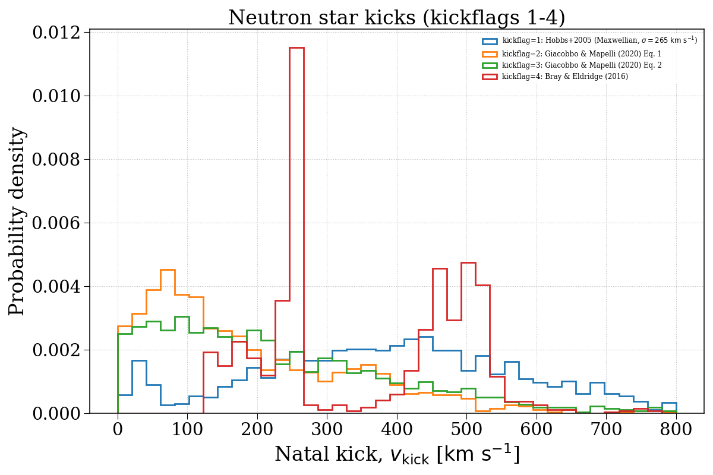
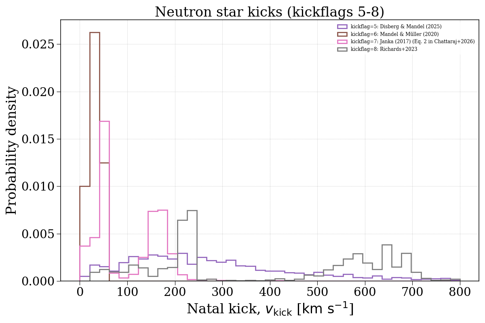
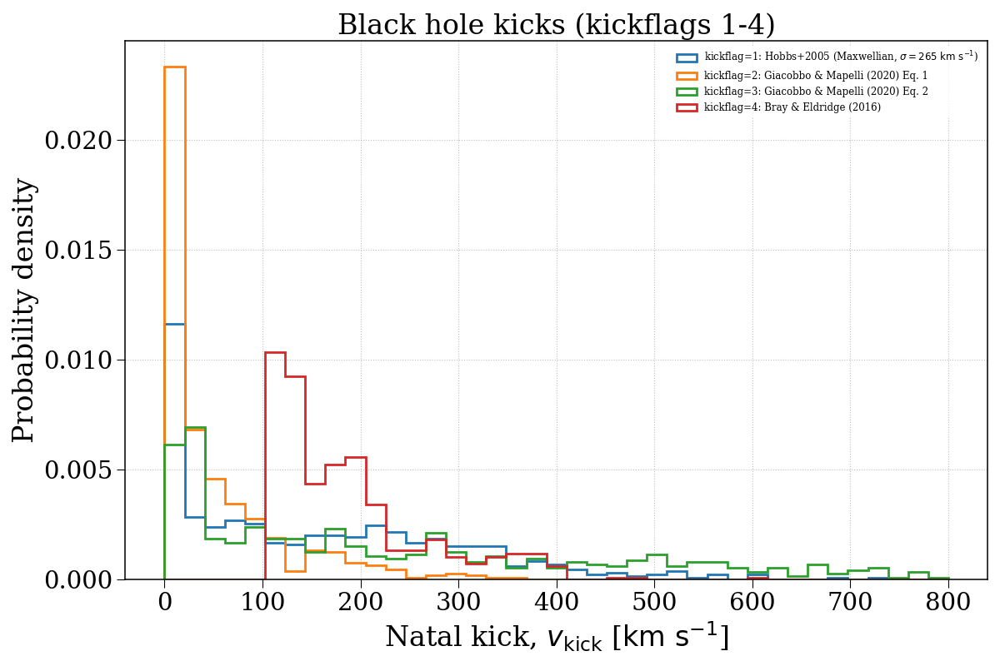
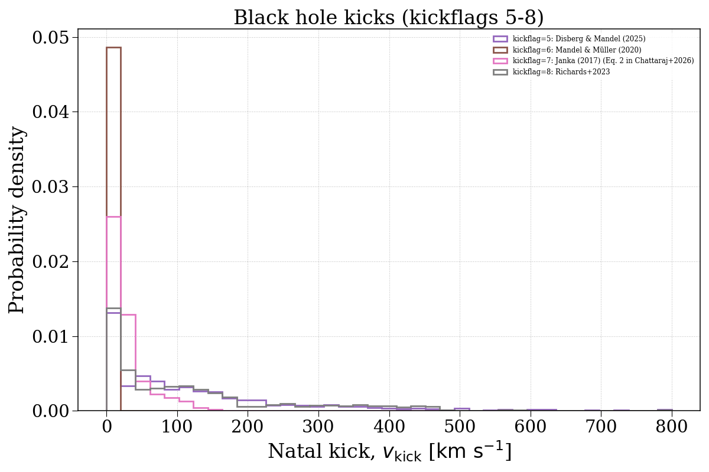

Note
Go to the end to download the full example code.
kickflag¶
This example demonstrates how changing the kickflag parameter can affect the natal kick velocity distributions of compact objects. We separate this into neutron stars and black holes.




Evolving population with kickflag = 1...
Evolving: 0%| | 0/2015 [00:00<?, ?sys/s]
Evolving: 1%|▏ | 30/2015 [00:00<00:06, 292.13sys/s]
Evolving: 3%|▎ | 60/2015 [00:00<00:18, 105.84sys/s]
Evolving: 4%|▍ | 81/2015 [00:00<00:15, 126.37sys/s]
Evolving: 5%|▍ | 99/2015 [00:00<00:15, 122.59sys/s]
Evolving: 6%|▌ | 117/2015 [00:00<00:14, 132.64sys/s]
Evolving: 7%|▋ | 133/2015 [00:01<00:16, 116.28sys/s]
Evolving: 7%|▋ | 151/2015 [00:01<00:14, 127.64sys/s]
Evolving: 8%|▊ | 166/2015 [00:01<00:18, 97.60sys/s]
Evolving: 9%|▉ | 184/2015 [00:01<00:16, 113.86sys/s]
Evolving: 10%|█ | 202/2015 [00:01<00:14, 127.85sys/s]
Evolving: 11%|█ | 217/2015 [00:01<00:14, 123.81sys/s]
Evolving: 12%|█▏ | 233/2015 [00:01<00:13, 131.85sys/s]
Evolving: 12%|█▏ | 248/2015 [00:02<00:16, 107.12sys/s]
Evolving: 13%|█▎ | 263/2015 [00:02<00:15, 110.28sys/s]
Evolving: 14%|█▎ | 276/2015 [00:02<00:18, 96.28sys/s]
Evolving: 15%|█▍ | 298/2015 [00:02<00:15, 113.75sys/s]
Evolving: 16%|█▌ | 319/2015 [00:02<00:12, 133.00sys/s]
Evolving: 17%|█▋ | 335/2015 [00:02<00:12, 136.31sys/s]
Evolving: 17%|█▋ | 350/2015 [00:02<00:15, 109.13sys/s]
Evolving: 18%|█▊ | 363/2015 [00:03<00:16, 100.01sys/s]
Evolving: 19%|█▉ | 388/2015 [00:03<00:12, 127.77sys/s]
Evolving: 20%|██ | 403/2015 [00:03<00:12, 130.80sys/s]
Evolving: 21%|██ | 418/2015 [00:03<00:12, 130.75sys/s]
Evolving: 22%|██▏ | 434/2015 [00:03<00:12, 129.45sys/s]
Evolving: 22%|██▏ | 448/2015 [00:03<00:11, 131.45sys/s]
Evolving: 23%|██▎ | 462/2015 [00:03<00:16, 95.47sys/s]
Evolving: 24%|██▍ | 492/2015 [00:04<00:11, 133.00sys/s]
Evolving: 25%|██▌ | 508/2015 [00:04<00:11, 135.86sys/s]
Evolving: 26%|██▌ | 524/2015 [00:04<00:11, 133.18sys/s]
Evolving: 27%|██▋ | 539/2015 [00:04<00:11, 129.54sys/s]
Evolving: 27%|██▋ | 553/2015 [00:04<00:11, 131.99sys/s]
Evolving: 28%|██▊ | 567/2015 [00:04<00:11, 129.13sys/s]
Evolving: 29%|██▉ | 586/2015 [00:04<00:10, 133.65sys/s]
Evolving: 30%|██▉ | 603/2015 [00:04<00:10, 140.59sys/s]
Evolving: 31%|███ | 619/2015 [00:04<00:09, 141.54sys/s]
Evolving: 31%|███▏ | 634/2015 [00:05<00:09, 138.97sys/s]
Evolving: 32%|███▏ | 650/2015 [00:05<00:09, 141.85sys/s]
Evolving: 33%|███▎ | 665/2015 [00:05<00:09, 137.02sys/s]
Evolving: 34%|███▎ | 679/2015 [00:05<00:10, 132.84sys/s]
Evolving: 34%|███▍ | 693/2015 [00:05<00:09, 132.23sys/s]
Evolving: 35%|███▌ | 707/2015 [00:05<00:10, 120.87sys/s]
Evolving: 36%|███▌ | 723/2015 [00:05<00:09, 129.37sys/s]
Evolving: 37%|███▋ | 738/2015 [00:05<00:10, 127.37sys/s]
Evolving: 37%|███▋ | 754/2015 [00:06<00:09, 132.75sys/s]
Evolving: 38%|███▊ | 768/2015 [00:06<00:12, 100.21sys/s]
Evolving: 39%|███▊ | 780/2015 [00:06<00:12, 102.82sys/s]
Evolving: 40%|███▉ | 802/2015 [00:06<00:09, 127.94sys/s]
Evolving: 41%|████ | 817/2015 [00:06<00:09, 127.34sys/s]
Evolving: 41%|████ | 831/2015 [00:06<00:12, 92.95sys/s]
Evolving: 42%|████▏ | 851/2015 [00:06<00:10, 108.69sys/s]
Evolving: 43%|████▎ | 871/2015 [00:07<00:09, 115.92sys/s]
Evolving: 44%|████▍ | 884/2015 [00:07<00:10, 110.89sys/s]
Evolving: 45%|████▍ | 899/2015 [00:07<00:09, 111.87sys/s]
Evolving: 45%|████▌ | 916/2015 [00:07<00:08, 124.76sys/s]
Evolving: 46%|████▌ | 930/2015 [00:07<00:08, 127.72sys/s]
Evolving: 47%|████▋ | 945/2015 [00:07<00:08, 129.89sys/s]
Evolving: 48%|████▊ | 962/2015 [00:07<00:08, 130.78sys/s]
Evolving: 48%|████▊ | 976/2015 [00:08<00:09, 111.86sys/s]
Evolving: 49%|████▉ | 988/2015 [00:08<00:11, 88.14sys/s]
Evolving: 50%|█████ | 1017/2015 [00:08<00:07, 129.50sys/s]
Evolving: 51%|█████▏ | 1033/2015 [00:08<00:10, 96.92sys/s]
Evolving: 52%|█████▏ | 1057/2015 [00:08<00:07, 122.39sys/s]
Evolving: 53%|█████▎ | 1073/2015 [00:08<00:07, 118.77sys/s]
Evolving: 54%|█████▍ | 1092/2015 [00:08<00:06, 134.05sys/s]
Evolving: 55%|█████▍ | 1108/2015 [00:09<00:06, 137.83sys/s]
Evolving: 56%|█████▌ | 1124/2015 [00:09<00:06, 131.87sys/s]
Evolving: 57%|█████▋ | 1139/2015 [00:09<00:06, 135.55sys/s]
Evolving: 57%|█████▋ | 1154/2015 [00:09<00:06, 136.35sys/s]
Evolving: 58%|█████▊ | 1169/2015 [00:09<00:06, 132.63sys/s]
Evolving: 59%|█████▊ | 1183/2015 [00:09<00:08, 96.21sys/s]
Evolving: 60%|██████ | 1210/2015 [00:09<00:06, 125.13sys/s]
Evolving: 61%|██████ | 1225/2015 [00:10<00:06, 130.17sys/s]
Evolving: 62%|██████▏ | 1240/2015 [00:10<00:07, 98.81sys/s]
Evolving: 63%|██████▎ | 1262/2015 [00:10<00:06, 113.47sys/s]
Evolving: 64%|██████▎ | 1282/2015 [00:10<00:05, 131.29sys/s]
Evolving: 64%|██████▍ | 1297/2015 [00:10<00:05, 131.42sys/s]
Evolving: 65%|██████▌ | 1312/2015 [00:10<00:05, 130.23sys/s]
Evolving: 66%|██████▌ | 1326/2015 [00:10<00:05, 120.25sys/s]
Evolving: 67%|██████▋ | 1342/2015 [00:10<00:05, 128.67sys/s]
Evolving: 67%|██████▋ | 1358/2015 [00:11<00:04, 134.10sys/s]
Evolving: 68%|██████▊ | 1374/2015 [00:11<00:04, 139.11sys/s]
Evolving: 69%|██████▉ | 1389/2015 [00:11<00:04, 136.15sys/s]
Evolving: 70%|██████▉ | 1403/2015 [00:11<00:04, 134.35sys/s]
Evolving: 70%|███████ | 1417/2015 [00:11<00:06, 87.65sys/s]
Evolving: 72%|███████▏ | 1444/2015 [00:11<00:04, 114.29sys/s]
Evolving: 73%|███████▎ | 1467/2015 [00:11<00:03, 137.84sys/s]
Evolving: 74%|███████▎ | 1484/2015 [00:12<00:04, 117.60sys/s]
Evolving: 74%|███████▍ | 1498/2015 [00:12<00:05, 103.34sys/s]
Evolving: 75%|███████▌ | 1516/2015 [00:12<00:04, 116.87sys/s]
Evolving: 76%|███████▌ | 1530/2015 [00:12<00:04, 120.20sys/s]
Evolving: 77%|███████▋ | 1544/2015 [00:12<00:03, 119.07sys/s]
Evolving: 77%|███████▋ | 1557/2015 [00:12<00:05, 91.60sys/s]
Evolving: 78%|███████▊ | 1581/2015 [00:13<00:03, 120.13sys/s]
Evolving: 79%|███████▉ | 1595/2015 [00:13<00:03, 123.86sys/s]
Evolving: 80%|███████▉ | 1609/2015 [00:13<00:03, 126.31sys/s]
Evolving: 81%|████████ | 1624/2015 [00:13<00:03, 124.80sys/s]
Evolving: 81%|████████▏ | 1638/2015 [00:13<00:03, 96.26sys/s]
Evolving: 82%|████████▏ | 1662/2015 [00:13<00:02, 124.90sys/s]
Evolving: 83%|████████▎ | 1678/2015 [00:13<00:02, 125.30sys/s]
Evolving: 84%|████████▍ | 1692/2015 [00:14<00:03, 95.52sys/s]
Evolving: 85%|████████▌ | 1718/2015 [00:14<00:02, 126.93sys/s]
Evolving: 86%|████████▌ | 1734/2015 [00:14<00:02, 128.57sys/s]
Evolving: 87%|████████▋ | 1750/2015 [00:14<00:01, 135.70sys/s]
Evolving: 88%|████████▊ | 1766/2015 [00:14<00:02, 110.25sys/s]
Evolving: 88%|████████▊ | 1783/2015 [00:14<00:01, 119.72sys/s]
Evolving: 89%|████████▉ | 1797/2015 [00:14<00:02, 101.40sys/s]
Evolving: 90%|█████████ | 1820/2015 [00:15<00:01, 124.76sys/s]
Evolving: 91%|█████████ | 1835/2015 [00:15<00:01, 100.39sys/s]
Evolving: 92%|█████████▏| 1855/2015 [00:15<00:01, 117.74sys/s]
Evolving: 93%|█████████▎| 1869/2015 [00:15<00:01, 94.32sys/s]
Evolving: 94%|█████████▍| 1892/2015 [00:15<00:01, 116.52sys/s]
Evolving: 95%|█████████▍| 1906/2015 [00:15<00:00, 121.19sys/s]
Evolving: 95%|█████████▌| 1921/2015 [00:15<00:00, 126.32sys/s]
Evolving: 96%|█████████▌| 1935/2015 [00:16<00:00, 123.31sys/s]
Evolving: 97%|█████████▋| 1954/2015 [00:16<00:00, 137.52sys/s]
Evolving: 98%|█████████▊| 1969/2015 [00:16<00:00, 134.90sys/s]
Evolving: 98%|█████████▊| 1984/2015 [00:16<00:00, 135.56sys/s]
Evolving: 99%|█████████▉| 1999/2015 [00:16<00:00, 136.47sys/s]
Evolving: 100%|█████████▉| 2013/2015 [00:16<00:00, 134.12sys/s]
Evolving: 100%|██████████| 2015/2015 [00:16<00:00, 121.15sys/s]
[Time taken: 16.9629 seconds]
Evolving population with kickflag = 2...
Evolving: 0%| | 0/2015 [00:00<?, ?sys/s]
Evolving: 0%| | 8/2015 [00:00<00:27, 72.84sys/s]
Evolving: 1%| | 25/2015 [00:00<00:16, 119.52sys/s]
Evolving: 2%|▏ | 38/2015 [00:00<00:24, 81.88sys/s]
Evolving: 3%|▎ | 55/2015 [00:00<00:24, 80.54sys/s]
Evolving: 3%|▎ | 64/2015 [00:00<00:23, 82.48sys/s]
Evolving: 5%|▍ | 93/2015 [00:00<00:14, 128.33sys/s]
Evolving: 5%|▌ | 109/2015 [00:00<00:14, 132.13sys/s]
Evolving: 6%|▌ | 125/2015 [00:01<00:13, 136.40sys/s]
Evolving: 7%|▋ | 140/2015 [00:01<00:14, 130.76sys/s]
Evolving: 8%|▊ | 154/2015 [00:01<00:14, 128.98sys/s]
Evolving: 8%|▊ | 168/2015 [00:01<00:19, 95.61sys/s]
Evolving: 9%|▉ | 189/2015 [00:01<00:15, 118.01sys/s]
Evolving: 10%|█ | 204/2015 [00:01<00:14, 124.55sys/s]
Evolving: 11%|█ | 218/2015 [00:01<00:14, 120.67sys/s]
Evolving: 12%|█▏ | 233/2015 [00:02<00:14, 122.89sys/s]
Evolving: 12%|█▏ | 246/2015 [00:02<00:17, 98.82sys/s]
Evolving: 13%|█▎ | 263/2015 [00:02<00:15, 112.47sys/s]
Evolving: 14%|█▎ | 276/2015 [00:02<00:18, 96.03sys/s]
Evolving: 15%|█▍ | 298/2015 [00:02<00:14, 118.53sys/s]
Evolving: 16%|█▌ | 319/2015 [00:02<00:12, 136.68sys/s]
Evolving: 17%|█▋ | 334/2015 [00:02<00:12, 137.06sys/s]
Evolving: 17%|█▋ | 349/2015 [00:03<00:15, 105.44sys/s]
Evolving: 18%|█▊ | 362/2015 [00:03<00:17, 96.01sys/s]
Evolving: 19%|█▉ | 390/2015 [00:03<00:12, 133.66sys/s]
Evolving: 20%|██ | 406/2015 [00:03<00:11, 135.82sys/s]
Evolving: 21%|██ | 422/2015 [00:03<00:11, 138.59sys/s]
Evolving: 22%|██▏ | 438/2015 [00:03<00:11, 136.40sys/s]
Evolving: 22%|██▏ | 453/2015 [00:03<00:11, 130.74sys/s]
Evolving: 23%|██▎ | 467/2015 [00:04<00:16, 95.62sys/s]
Evolving: 25%|██▍ | 496/2015 [00:04<00:11, 133.29sys/s]
Evolving: 25%|██▌ | 512/2015 [00:04<00:11, 135.76sys/s]
Evolving: 26%|██▌ | 528/2015 [00:04<00:11, 133.67sys/s]
Evolving: 27%|██▋ | 543/2015 [00:04<00:11, 130.70sys/s]
Evolving: 28%|██▊ | 557/2015 [00:04<00:11, 128.88sys/s]
Evolving: 28%|██▊ | 572/2015 [00:04<00:10, 134.20sys/s]
Evolving: 29%|██▉ | 587/2015 [00:04<00:10, 137.08sys/s]
Evolving: 30%|██▉ | 602/2015 [00:04<00:10, 139.45sys/s]
Evolving: 31%|███ | 617/2015 [00:05<00:10, 137.05sys/s]
Evolving: 31%|███▏ | 631/2015 [00:05<00:10, 133.77sys/s]
Evolving: 32%|███▏ | 647/2015 [00:05<00:09, 137.85sys/s]
Evolving: 33%|███▎ | 661/2015 [00:05<00:09, 138.26sys/s]
Evolving: 33%|███▎ | 675/2015 [00:05<00:11, 121.41sys/s]
Evolving: 34%|███▍ | 693/2015 [00:05<00:10, 131.03sys/s]
Evolving: 35%|███▌ | 707/2015 [00:05<00:10, 127.04sys/s]
Evolving: 36%|███▌ | 722/2015 [00:05<00:10, 123.98sys/s]
Evolving: 37%|███▋ | 738/2015 [00:06<00:09, 131.08sys/s]
Evolving: 37%|███▋ | 753/2015 [00:06<00:09, 131.68sys/s]
Evolving: 38%|███▊ | 767/2015 [00:06<00:12, 97.73sys/s]
Evolving: 39%|███▉ | 789/2015 [00:06<00:10, 119.11sys/s]
Evolving: 40%|███▉ | 805/2015 [00:06<00:09, 124.45sys/s]
Evolving: 41%|████ | 820/2015 [00:06<00:09, 127.94sys/s]
Evolving: 41%|████▏ | 834/2015 [00:06<00:12, 95.20sys/s]
Evolving: 42%|████▏ | 851/2015 [00:07<00:11, 104.60sys/s]
Evolving: 43%|████▎ | 871/2015 [00:07<00:09, 114.75sys/s]
Evolving: 44%|████▍ | 884/2015 [00:07<00:10, 107.14sys/s]
Evolving: 45%|████▍ | 899/2015 [00:07<00:10, 109.66sys/s]
Evolving: 46%|████▌ | 920/2015 [00:07<00:08, 128.09sys/s]
Evolving: 46%|████▋ | 934/2015 [00:07<00:08, 126.45sys/s]
Evolving: 47%|████▋ | 950/2015 [00:07<00:08, 128.39sys/s]
Evolving: 48%|████▊ | 964/2015 [00:08<00:11, 88.56sys/s]
Evolving: 49%|████▊ | 982/2015 [00:08<00:11, 86.80sys/s]
Evolving: 50%|█████ | 1017/2015 [00:08<00:07, 131.10sys/s]
Evolving: 51%|█████▏ | 1033/2015 [00:08<00:09, 104.78sys/s]
Evolving: 52%|█████▏ | 1056/2015 [00:08<00:07, 123.50sys/s]
Evolving: 53%|█████▎ | 1071/2015 [00:08<00:07, 124.80sys/s]
Evolving: 54%|█████▍ | 1087/2015 [00:09<00:07, 132.37sys/s]
Evolving: 55%|█████▍ | 1102/2015 [00:09<00:06, 132.11sys/s]
Evolving: 55%|█████▌ | 1117/2015 [00:09<00:06, 134.30sys/s]
Evolving: 56%|█████▌ | 1132/2015 [00:09<00:06, 130.77sys/s]
Evolving: 57%|█████▋ | 1147/2015 [00:09<00:06, 132.95sys/s]
Evolving: 58%|█████▊ | 1162/2015 [00:09<00:06, 135.87sys/s]
Evolving: 58%|█████▊ | 1177/2015 [00:09<00:09, 89.58sys/s]
Evolving: 60%|██████ | 1210/2015 [00:10<00:05, 135.74sys/s]
Evolving: 61%|██████ | 1228/2015 [00:10<00:05, 132.04sys/s]
Evolving: 62%|██████▏ | 1244/2015 [00:10<00:07, 105.26sys/s]
Evolving: 63%|██████▎ | 1262/2015 [00:10<00:06, 111.98sys/s]
Evolving: 64%|██████▎ | 1283/2015 [00:10<00:05, 131.68sys/s]
Evolving: 64%|██████▍ | 1299/2015 [00:10<00:05, 127.16sys/s]
Evolving: 65%|██████▌ | 1315/2015 [00:10<00:05, 133.08sys/s]
Evolving: 66%|██████▌ | 1330/2015 [00:11<00:05, 125.53sys/s]
Evolving: 67%|██████▋ | 1346/2015 [00:11<00:05, 126.94sys/s]
Evolving: 68%|██████▊ | 1362/2015 [00:11<00:04, 134.38sys/s]
Evolving: 68%|██████▊ | 1377/2015 [00:11<00:04, 131.22sys/s]
Evolving: 69%|██████▉ | 1392/2015 [00:11<00:04, 131.17sys/s]
Evolving: 70%|██████▉ | 1406/2015 [00:11<00:05, 120.85sys/s]
Evolving: 70%|███████ | 1419/2015 [00:11<00:06, 91.63sys/s]
Evolving: 72%|███████▏ | 1444/2015 [00:12<00:04, 120.33sys/s]
Evolving: 73%|███████▎ | 1465/2015 [00:12<00:03, 138.28sys/s]
Evolving: 73%|███████▎ | 1481/2015 [00:12<00:04, 110.20sys/s]
Evolving: 74%|███████▍ | 1494/2015 [00:12<00:05, 98.98sys/s]
Evolving: 75%|███████▌ | 1514/2015 [00:12<00:04, 118.56sys/s]
Evolving: 76%|███████▌ | 1529/2015 [00:12<00:03, 124.25sys/s]
Evolving: 77%|███████▋ | 1543/2015 [00:12<00:03, 120.71sys/s]
Evolving: 77%|███████▋ | 1557/2015 [00:13<00:05, 90.08sys/s]
Evolving: 78%|███████▊ | 1581/2015 [00:13<00:03, 119.67sys/s]
Evolving: 79%|███████▉ | 1596/2015 [00:13<00:03, 123.69sys/s]
Evolving: 80%|███████▉ | 1611/2015 [00:13<00:03, 127.18sys/s]
Evolving: 81%|████████ | 1626/2015 [00:13<00:03, 129.09sys/s]
Evolving: 81%|████████▏ | 1640/2015 [00:13<00:03, 95.17sys/s]
Evolving: 83%|████████▎ | 1664/2015 [00:13<00:02, 123.45sys/s]
Evolving: 83%|████████▎ | 1679/2015 [00:14<00:02, 126.16sys/s]
Evolving: 84%|████████▍ | 1694/2015 [00:14<00:03, 98.06sys/s]
Evolving: 85%|████████▌ | 1720/2015 [00:14<00:02, 128.45sys/s]
Evolving: 86%|████████▌ | 1736/2015 [00:14<00:02, 130.45sys/s]
Evolving: 87%|████████▋ | 1751/2015 [00:14<00:02, 129.51sys/s]
Evolving: 88%|████████▊ | 1766/2015 [00:14<00:02, 106.81sys/s]
Evolving: 88%|████████▊ | 1783/2015 [00:14<00:02, 113.22sys/s]
Evolving: 89%|████████▉ | 1796/2015 [00:15<00:02, 99.83sys/s]
Evolving: 90%|█████████ | 1818/2015 [00:15<00:01, 125.34sys/s]
Evolving: 91%|█████████ | 1833/2015 [00:15<00:01, 96.31sys/s]
Evolving: 92%|█████████▏| 1845/2015 [00:15<00:01, 100.57sys/s]
Evolving: 92%|█████████▏| 1860/2015 [00:15<00:01, 85.76sys/s]
Evolving: 94%|█████████▎| 1889/2015 [00:15<00:01, 122.42sys/s]
Evolving: 94%|█████████▍| 1904/2015 [00:16<00:00, 126.59sys/s]
Evolving: 95%|█████████▌| 1920/2015 [00:16<00:00, 130.78sys/s]
Evolving: 96%|█████████▌| 1935/2015 [00:16<00:00, 122.60sys/s]
Evolving: 97%|█████████▋| 1953/2015 [00:16<00:00, 134.39sys/s]
Evolving: 98%|█████████▊| 1968/2015 [00:16<00:00, 130.55sys/s]
Evolving: 99%|█████████▊| 1985/2015 [00:16<00:00, 137.38sys/s]
Evolving: 99%|█████████▉| 2000/2015 [00:16<00:00, 137.56sys/s]
Evolving: 100%|██████████| 2015/2015 [00:16<00:00, 136.00sys/s]
Evolving: 100%|██████████| 2015/2015 [00:16<00:00, 119.51sys/s]
[Time taken: 17.0319 seconds]
Evolving population with kickflag = 3...
Evolving: 0%| | 0/2015 [00:00<?, ?sys/s]
Evolving: 0%| | 8/2015 [00:00<00:33, 60.64sys/s]
Evolving: 1%|▏ | 27/2015 [00:00<00:16, 120.48sys/s]
Evolving: 2%|▏ | 40/2015 [00:00<00:23, 85.20sys/s]
Evolving: 3%|▎ | 55/2015 [00:00<00:24, 79.13sys/s]
Evolving: 4%|▍ | 84/2015 [00:00<00:16, 120.31sys/s]
Evolving: 5%|▍ | 98/2015 [00:00<00:16, 118.17sys/s]
Evolving: 6%|▌ | 114/2015 [00:01<00:15, 119.10sys/s]
Evolving: 7%|▋ | 132/2015 [00:01<00:14, 130.71sys/s]
Evolving: 7%|▋ | 146/2015 [00:01<00:14, 129.51sys/s]
Evolving: 8%|▊ | 160/2015 [00:01<00:22, 83.07sys/s]
Evolving: 9%|▉ | 191/2015 [00:01<00:14, 123.59sys/s]
Evolving: 10%|█ | 207/2015 [00:01<00:14, 126.29sys/s]
Evolving: 11%|█ | 223/2015 [00:01<00:14, 127.67sys/s]
Evolving: 12%|█▏ | 238/2015 [00:02<00:19, 91.58sys/s]
Evolving: 13%|█▎ | 267/2015 [00:02<00:13, 126.58sys/s]
Evolving: 14%|█▍ | 284/2015 [00:02<00:15, 114.56sys/s]
Evolving: 15%|█▍ | 299/2015 [00:02<00:14, 117.42sys/s]
Evolving: 16%|█▌ | 318/2015 [00:02<00:12, 132.44sys/s]
Evolving: 17%|█▋ | 334/2015 [00:02<00:12, 136.00sys/s]
Evolving: 17%|█▋ | 349/2015 [00:03<00:15, 106.73sys/s]
Evolving: 18%|█▊ | 362/2015 [00:03<00:17, 92.95sys/s]
Evolving: 19%|█▉ | 392/2015 [00:03<00:12, 124.91sys/s]
Evolving: 20%|██ | 410/2015 [00:03<00:11, 135.06sys/s]
Evolving: 21%|██ | 426/2015 [00:03<00:11, 138.00sys/s]
Evolving: 22%|██▏ | 441/2015 [00:03<00:11, 139.68sys/s]
Evolving: 23%|██▎ | 456/2015 [00:03<00:12, 125.99sys/s]
Evolving: 23%|██▎ | 470/2015 [00:04<00:15, 101.39sys/s]
Evolving: 25%|██▍ | 495/2015 [00:04<00:11, 129.88sys/s]
Evolving: 25%|██▌ | 511/2015 [00:04<00:11, 131.52sys/s]
Evolving: 26%|██▌ | 526/2015 [00:04<00:11, 133.30sys/s]
Evolving: 27%|██▋ | 541/2015 [00:04<00:11, 128.36sys/s]
Evolving: 28%|██▊ | 555/2015 [00:04<00:11, 129.49sys/s]
Evolving: 28%|██▊ | 571/2015 [00:04<00:10, 133.87sys/s]
Evolving: 29%|██▉ | 587/2015 [00:04<00:10, 140.50sys/s]
Evolving: 30%|██▉ | 602/2015 [00:04<00:10, 140.72sys/s]
Evolving: 31%|███ | 617/2015 [00:05<00:10, 139.46sys/s]
Evolving: 31%|███▏ | 632/2015 [00:05<00:09, 140.50sys/s]
Evolving: 32%|███▏ | 647/2015 [00:05<00:10, 133.50sys/s]
Evolving: 33%|███▎ | 664/2015 [00:05<00:09, 139.43sys/s]
Evolving: 34%|███▎ | 679/2015 [00:05<00:10, 129.27sys/s]
Evolving: 34%|███▍ | 694/2015 [00:05<00:10, 130.00sys/s]
Evolving: 35%|███▌ | 708/2015 [00:05<00:10, 125.78sys/s]
Evolving: 36%|███▌ | 723/2015 [00:05<00:09, 131.86sys/s]
Evolving: 37%|███▋ | 738/2015 [00:06<00:09, 129.75sys/s]
Evolving: 37%|███▋ | 754/2015 [00:06<00:09, 134.72sys/s]
Evolving: 38%|███▊ | 768/2015 [00:06<00:12, 101.62sys/s]
Evolving: 39%|███▊ | 780/2015 [00:06<00:12, 98.97sys/s]
Evolving: 40%|███▉ | 804/2015 [00:06<00:09, 131.35sys/s]
Evolving: 41%|████ | 819/2015 [00:06<00:08, 135.73sys/s]
Evolving: 41%|████▏ | 834/2015 [00:06<00:11, 98.73sys/s]
Evolving: 42%|████▏ | 851/2015 [00:07<00:10, 108.02sys/s]
Evolving: 43%|████▎ | 868/2015 [00:07<00:09, 120.41sys/s]
Evolving: 44%|████▍ | 882/2015 [00:07<00:10, 104.84sys/s]
Evolving: 45%|████▍ | 899/2015 [00:07<00:09, 112.76sys/s]
Evolving: 45%|████▌ | 916/2015 [00:07<00:08, 125.05sys/s]
Evolving: 46%|████▌ | 930/2015 [00:07<00:08, 123.83sys/s]
Evolving: 47%|████▋ | 945/2015 [00:07<00:08, 128.64sys/s]
Evolving: 48%|████▊ | 959/2015 [00:07<00:08, 130.84sys/s]
Evolving: 48%|████▊ | 973/2015 [00:08<00:10, 100.77sys/s]
Evolving: 49%|████▉ | 985/2015 [00:08<00:12, 80.33sys/s]
Evolving: 51%|█████ | 1018/2015 [00:08<00:07, 128.95sys/s]
Evolving: 51%|█████▏ | 1035/2015 [00:08<00:09, 105.14sys/s]
Evolving: 52%|█████▏ | 1054/2015 [00:08<00:08, 118.79sys/s]
Evolving: 53%|█████▎ | 1072/2015 [00:08<00:07, 128.73sys/s]
Evolving: 54%|█████▍ | 1088/2015 [00:09<00:06, 133.93sys/s]
Evolving: 55%|█████▍ | 1104/2015 [00:09<00:06, 132.66sys/s]
Evolving: 56%|█████▌ | 1119/2015 [00:09<00:06, 135.98sys/s]
Evolving: 56%|█████▋ | 1134/2015 [00:09<00:06, 138.83sys/s]
Evolving: 57%|█████▋ | 1149/2015 [00:09<00:06, 129.86sys/s]
Evolving: 58%|█████▊ | 1165/2015 [00:09<00:06, 132.46sys/s]
Evolving: 59%|█████▊ | 1179/2015 [00:09<00:09, 86.85sys/s]
Evolving: 60%|██████ | 1212/2015 [00:10<00:06, 131.81sys/s]
Evolving: 61%|██████ | 1229/2015 [00:10<00:05, 132.16sys/s]
Evolving: 62%|██████▏ | 1245/2015 [00:10<00:07, 106.35sys/s]
Evolving: 63%|██████▎ | 1262/2015 [00:10<00:06, 109.50sys/s]
Evolving: 64%|██████▎ | 1283/2015 [00:10<00:05, 129.52sys/s]
Evolving: 64%|██████▍ | 1298/2015 [00:10<00:05, 126.96sys/s]
Evolving: 65%|██████▌ | 1314/2015 [00:10<00:05, 131.27sys/s]
Evolving: 66%|██████▌ | 1329/2015 [00:11<00:05, 123.51sys/s]
Evolving: 67%|██████▋ | 1345/2015 [00:11<00:05, 129.37sys/s]
Evolving: 67%|██████▋ | 1359/2015 [00:11<00:05, 127.41sys/s]
Evolving: 68%|██████▊ | 1376/2015 [00:11<00:04, 136.24sys/s]
Evolving: 69%|██████▉ | 1391/2015 [00:11<00:04, 131.67sys/s]
Evolving: 70%|██████▉ | 1405/2015 [00:11<00:05, 116.09sys/s]
Evolving: 70%|███████ | 1418/2015 [00:11<00:06, 87.25sys/s]
Evolving: 72%|███████▏ | 1444/2015 [00:12<00:04, 120.64sys/s]
Evolving: 73%|███████▎ | 1462/2015 [00:12<00:04, 130.68sys/s]
Evolving: 73%|███████▎ | 1477/2015 [00:12<00:05, 103.59sys/s]
Evolving: 74%|███████▍ | 1490/2015 [00:12<00:05, 92.63sys/s]
Evolving: 75%|███████▌ | 1518/2015 [00:12<00:03, 125.61sys/s]
Evolving: 76%|███████▌ | 1533/2015 [00:12<00:04, 113.65sys/s]
Evolving: 77%|███████▋ | 1552/2015 [00:12<00:03, 129.75sys/s]
Evolving: 78%|███████▊ | 1567/2015 [00:13<00:03, 115.01sys/s]
Evolving: 78%|███████▊ | 1581/2015 [00:13<00:03, 116.16sys/s]
Evolving: 79%|███████▉ | 1596/2015 [00:13<00:03, 121.60sys/s]
Evolving: 80%|███████▉ | 1609/2015 [00:13<00:03, 120.41sys/s]
Evolving: 81%|████████ | 1624/2015 [00:13<00:03, 127.92sys/s]
Evolving: 81%|████████▏ | 1638/2015 [00:13<00:03, 95.02sys/s]
Evolving: 82%|████████▏ | 1659/2015 [00:13<00:03, 116.10sys/s]
Evolving: 83%|████████▎ | 1676/2015 [00:13<00:02, 128.45sys/s]
Evolving: 84%|████████▍ | 1691/2015 [00:14<00:03, 93.69sys/s]
Evolving: 85%|████████▌ | 1721/2015 [00:14<00:02, 133.39sys/s]
Evolving: 86%|████████▋ | 1738/2015 [00:14<00:02, 128.61sys/s]
Evolving: 87%|████████▋ | 1754/2015 [00:14<00:01, 134.79sys/s]
Evolving: 88%|████████▊ | 1770/2015 [00:14<00:02, 119.55sys/s]
Evolving: 89%|████████▊ | 1784/2015 [00:14<00:02, 114.06sys/s]
Evolving: 89%|████████▉ | 1797/2015 [00:15<00:02, 100.01sys/s]
Evolving: 90%|█████████ | 1817/2015 [00:15<00:01, 120.66sys/s]
Evolving: 91%|█████████ | 1831/2015 [00:15<00:01, 93.89sys/s]
Evolving: 91%|█████████▏| 1843/2015 [00:15<00:01, 98.21sys/s]
Evolving: 92%|█████████▏| 1860/2015 [00:15<00:01, 87.40sys/s]
Evolving: 94%|█████████▍| 1891/2015 [00:15<00:00, 128.93sys/s]
Evolving: 95%|█████████▍| 1907/2015 [00:16<00:00, 129.89sys/s]
Evolving: 95%|█████████▌| 1922/2015 [00:16<00:00, 133.31sys/s]
Evolving: 96%|█████████▌| 1937/2015 [00:16<00:00, 127.90sys/s]
Evolving: 97%|█████████▋| 1954/2015 [00:16<00:00, 137.80sys/s]
Evolving: 98%|█████████▊| 1969/2015 [00:16<00:00, 138.39sys/s]
Evolving: 98%|█████████▊| 1984/2015 [00:16<00:00, 136.31sys/s]
Evolving: 99%|█████████▉| 1999/2015 [00:16<00:00, 136.02sys/s]
Evolving: 100%|█████████▉| 2013/2015 [00:16<00:00, 132.92sys/s]
Evolving: 100%|██████████| 2015/2015 [00:16<00:00, 119.91sys/s]
[Time taken: 16.9830 seconds]
Evolving population with kickflag = 4...
Evolving: 0%| | 0/2015 [00:00<?, ?sys/s]
Evolving: 0%| | 8/2015 [00:00<00:27, 73.55sys/s]
Evolving: 1%| | 24/2015 [00:00<00:17, 114.23sys/s]
Evolving: 2%|▏ | 38/2015 [00:00<00:24, 82.31sys/s]
Evolving: 3%|▎ | 55/2015 [00:00<00:24, 79.32sys/s]
Evolving: 4%|▍ | 84/2015 [00:00<00:15, 123.11sys/s]
Evolving: 5%|▍ | 99/2015 [00:00<00:16, 118.78sys/s]
Evolving: 6%|▌ | 114/2015 [00:01<00:15, 122.46sys/s]
Evolving: 6%|▋ | 130/2015 [00:01<00:14, 131.23sys/s]
Evolving: 7%|▋ | 144/2015 [00:01<00:14, 129.21sys/s]
Evolving: 8%|▊ | 158/2015 [00:01<00:22, 81.33sys/s]
Evolving: 9%|▉ | 184/2015 [00:01<00:15, 115.18sys/s]
Evolving: 10%|█ | 202/2015 [00:01<00:14, 126.83sys/s]
Evolving: 11%|█ | 218/2015 [00:01<00:14, 123.96sys/s]
Evolving: 12%|█▏ | 233/2015 [00:02<00:13, 128.14sys/s]
Evolving: 12%|█▏ | 248/2015 [00:02<00:16, 109.14sys/s]
Evolving: 13%|█▎ | 263/2015 [00:02<00:15, 113.16sys/s]
Evolving: 14%|█▎ | 276/2015 [00:02<00:18, 95.44sys/s]
Evolving: 15%|█▍ | 298/2015 [00:02<00:15, 113.35sys/s]
Evolving: 16%|█▌ | 322/2015 [00:02<00:12, 140.05sys/s]
Evolving: 17%|█▋ | 338/2015 [00:02<00:12, 135.56sys/s]
Evolving: 18%|█▊ | 353/2015 [00:03<00:14, 113.71sys/s]
Evolving: 18%|█▊ | 366/2015 [00:03<00:15, 105.59sys/s]
Evolving: 19%|█▉ | 387/2015 [00:03<00:12, 127.38sys/s]
Evolving: 20%|█▉ | 402/2015 [00:03<00:12, 129.41sys/s]
Evolving: 21%|██ | 419/2015 [00:03<00:11, 138.48sys/s]
Evolving: 22%|██▏ | 434/2015 [00:03<00:11, 132.68sys/s]
Evolving: 22%|██▏ | 448/2015 [00:03<00:12, 125.54sys/s]
Evolving: 23%|██▎ | 461/2015 [00:04<00:17, 86.64sys/s]
Evolving: 25%|██▍ | 498/2015 [00:04<00:10, 141.14sys/s]
Evolving: 26%|██▌ | 516/2015 [00:04<00:10, 137.24sys/s]
Evolving: 26%|██▋ | 533/2015 [00:04<00:10, 134.99sys/s]
Evolving: 27%|██▋ | 549/2015 [00:04<00:11, 129.01sys/s]
Evolving: 28%|██▊ | 565/2015 [00:04<00:10, 132.48sys/s]
Evolving: 29%|██▉ | 580/2015 [00:04<00:10, 136.45sys/s]
Evolving: 30%|██▉ | 595/2015 [00:04<00:10, 136.70sys/s]
Evolving: 30%|███ | 610/2015 [00:05<00:10, 137.52sys/s]
Evolving: 31%|███ | 625/2015 [00:05<00:09, 139.33sys/s]
Evolving: 32%|███▏ | 640/2015 [00:05<00:09, 137.98sys/s]
Evolving: 33%|███▎ | 656/2015 [00:05<00:10, 134.89sys/s]
Evolving: 33%|███▎ | 670/2015 [00:05<00:09, 135.92sys/s]
Evolving: 34%|███▍ | 684/2015 [00:05<00:10, 122.86sys/s]
Evolving: 35%|███▍ | 702/2015 [00:05<00:11, 117.35sys/s]
Evolving: 36%|███▌ | 724/2015 [00:05<00:09, 139.34sys/s]
Evolving: 37%|███▋ | 739/2015 [00:06<00:09, 138.63sys/s]
Evolving: 37%|███▋ | 754/2015 [00:06<00:09, 137.02sys/s]
Evolving: 38%|███▊ | 768/2015 [00:06<00:11, 104.26sys/s]
Evolving: 39%|███▊ | 780/2015 [00:06<00:11, 105.12sys/s]
Evolving: 40%|███▉ | 801/2015 [00:06<00:09, 127.93sys/s]
Evolving: 41%|████ | 817/2015 [00:06<00:08, 135.03sys/s]
Evolving: 41%|████▏ | 832/2015 [00:06<00:12, 94.84sys/s]
Evolving: 42%|████▏ | 851/2015 [00:07<00:10, 109.86sys/s]
Evolving: 43%|████▎ | 871/2015 [00:07<00:09, 118.21sys/s]
Evolving: 44%|████▍ | 885/2015 [00:07<00:09, 118.17sys/s]
Evolving: 45%|████▍ | 899/2015 [00:07<00:09, 112.41sys/s]
Evolving: 46%|████▌ | 920/2015 [00:07<00:08, 131.45sys/s]
Evolving: 46%|████▋ | 934/2015 [00:07<00:08, 129.39sys/s]
Evolving: 47%|████▋ | 948/2015 [00:07<00:08, 130.71sys/s]
Evolving: 48%|████▊ | 963/2015 [00:07<00:07, 134.80sys/s]
Evolving: 48%|████▊ | 977/2015 [00:08<00:09, 110.40sys/s]
Evolving: 49%|████▉ | 989/2015 [00:08<00:11, 89.30sys/s]
Evolving: 50%|█████ | 1016/2015 [00:08<00:08, 123.98sys/s]
Evolving: 51%|█████ | 1031/2015 [00:08<00:10, 93.71sys/s]
Evolving: 52%|█████▏ | 1057/2015 [00:08<00:07, 124.41sys/s]
Evolving: 53%|█████▎ | 1073/2015 [00:08<00:07, 127.42sys/s]
Evolving: 54%|█████▍ | 1089/2015 [00:09<00:07, 131.45sys/s]
Evolving: 55%|█████▍ | 1104/2015 [00:09<00:07, 126.92sys/s]
Evolving: 56%|█████▌ | 1120/2015 [00:09<00:06, 133.57sys/s]
Evolving: 56%|█████▋ | 1135/2015 [00:09<00:06, 131.94sys/s]
Evolving: 57%|█████▋ | 1149/2015 [00:09<00:06, 131.98sys/s]
Evolving: 58%|█████▊ | 1164/2015 [00:09<00:06, 131.48sys/s]
Evolving: 58%|█████▊ | 1178/2015 [00:09<00:09, 87.37sys/s]
Evolving: 60%|██████ | 1211/2015 [00:09<00:05, 134.93sys/s]
Evolving: 61%|██████ | 1229/2015 [00:10<00:06, 129.74sys/s]
Evolving: 62%|██████▏ | 1245/2015 [00:10<00:07, 108.43sys/s]
Evolving: 63%|██████▎ | 1262/2015 [00:10<00:06, 112.97sys/s]
Evolving: 64%|██████▎ | 1283/2015 [00:10<00:05, 130.20sys/s]
Evolving: 64%|██████▍ | 1298/2015 [00:10<00:05, 133.51sys/s]
Evolving: 65%|██████▌ | 1313/2015 [00:10<00:05, 135.33sys/s]
Evolving: 66%|██████▌ | 1328/2015 [00:10<00:05, 120.82sys/s]
Evolving: 67%|██████▋ | 1343/2015 [00:11<00:05, 123.80sys/s]
Evolving: 68%|██████▊ | 1362/2015 [00:11<00:04, 131.33sys/s]
Evolving: 68%|██████▊ | 1379/2015 [00:11<00:04, 140.31sys/s]
Evolving: 69%|██████▉ | 1394/2015 [00:11<00:04, 136.06sys/s]
Evolving: 70%|██████▉ | 1408/2015 [00:11<00:04, 124.04sys/s]
Evolving: 71%|███████ | 1421/2015 [00:11<00:06, 93.49sys/s]
Evolving: 72%|███████▏ | 1450/2015 [00:11<00:04, 131.97sys/s]
Evolving: 73%|███████▎ | 1466/2015 [00:12<00:04, 134.47sys/s]
Evolving: 73%|███████▎ | 1481/2015 [00:12<00:04, 109.79sys/s]
Evolving: 74%|███████▍ | 1494/2015 [00:12<00:05, 99.75sys/s]
Evolving: 75%|███████▌ | 1514/2015 [00:12<00:04, 120.78sys/s]
Evolving: 76%|███████▌ | 1528/2015 [00:12<00:03, 122.48sys/s]
Evolving: 77%|███████▋ | 1542/2015 [00:12<00:03, 120.78sys/s]
Evolving: 77%|███████▋ | 1555/2015 [00:12<00:05, 90.19sys/s]
Evolving: 78%|███████▊ | 1581/2015 [00:13<00:03, 119.69sys/s]
Evolving: 79%|███████▉ | 1599/2015 [00:13<00:03, 122.74sys/s]
Evolving: 80%|████████ | 1614/2015 [00:13<00:03, 128.04sys/s]
Evolving: 81%|████████ | 1629/2015 [00:13<00:02, 133.21sys/s]
Evolving: 82%|████████▏ | 1644/2015 [00:13<00:03, 106.06sys/s]
Evolving: 82%|████████▏ | 1662/2015 [00:13<00:02, 121.74sys/s]
Evolving: 83%|████████▎ | 1678/2015 [00:13<00:02, 125.74sys/s]
Evolving: 84%|████████▍ | 1692/2015 [00:14<00:03, 94.85sys/s]
Evolving: 85%|████████▌ | 1720/2015 [00:14<00:02, 130.60sys/s]
Evolving: 86%|████████▌ | 1736/2015 [00:14<00:02, 134.92sys/s]
Evolving: 87%|████████▋ | 1752/2015 [00:14<00:01, 136.57sys/s]
Evolving: 88%|████████▊ | 1768/2015 [00:14<00:02, 112.60sys/s]
Evolving: 88%|████████▊ | 1783/2015 [00:14<00:01, 116.45sys/s]
Evolving: 89%|████████▉ | 1796/2015 [00:14<00:02, 102.05sys/s]
Evolving: 90%|█████████ | 1818/2015 [00:15<00:01, 126.12sys/s]
Evolving: 91%|█████████ | 1833/2015 [00:15<00:01, 99.59sys/s]
Evolving: 92%|█████████▏| 1845/2015 [00:15<00:01, 102.08sys/s]
Evolving: 92%|█████████▏| 1860/2015 [00:15<00:01, 86.38sys/s]
Evolving: 94%|█████████▍| 1890/2015 [00:15<00:00, 126.43sys/s]
Evolving: 95%|█████████▍| 1906/2015 [00:15<00:00, 133.38sys/s]
Evolving: 95%|█████████▌| 1922/2015 [00:15<00:00, 132.71sys/s]
Evolving: 96%|█████████▌| 1937/2015 [00:16<00:00, 129.04sys/s]
Evolving: 97%|█████████▋| 1953/2015 [00:16<00:00, 135.52sys/s]
Evolving: 98%|█████████▊| 1968/2015 [00:16<00:00, 132.64sys/s]
Evolving: 98%|█████████▊| 1982/2015 [00:16<00:00, 133.34sys/s]
Evolving: 99%|█████████▉| 1997/2015 [00:16<00:00, 134.82sys/s]
Evolving: 100%|█████████▉| 2011/2015 [00:16<00:00, 132.90sys/s]
Evolving: 100%|██████████| 2015/2015 [00:16<00:00, 120.85sys/s]
[Time taken: 16.8477 seconds]
Evolving population with kickflag = 5...
Evolving: 0%| | 0/2015 [00:00<?, ?sys/s]
Evolving: 0%| | 9/2015 [00:00<00:22, 89.13sys/s]
Evolving: 1%| | 23/2015 [00:00<00:18, 110.23sys/s]
Evolving: 2%|▏ | 38/2015 [00:00<00:25, 76.24sys/s]
Evolving: 3%|▎ | 55/2015 [00:00<00:24, 80.47sys/s]
Evolving: 4%|▍ | 81/2015 [00:00<00:15, 122.27sys/s]
Evolving: 5%|▍ | 96/2015 [00:00<00:16, 117.55sys/s]
Evolving: 6%|▌ | 113/2015 [00:01<00:15, 126.65sys/s]
Evolving: 6%|▋ | 128/2015 [00:01<00:14, 129.77sys/s]
Evolving: 7%|▋ | 142/2015 [00:01<00:14, 127.04sys/s]
Evolving: 8%|▊ | 156/2015 [00:01<00:22, 80.88sys/s]
Evolving: 9%|▉ | 184/2015 [00:01<00:15, 115.03sys/s]
Evolving: 10%|█ | 205/2015 [00:01<00:13, 133.17sys/s]
Evolving: 11%|█ | 222/2015 [00:01<00:13, 130.35sys/s]
Evolving: 12%|█▏ | 238/2015 [00:02<00:18, 94.11sys/s]
Evolving: 13%|█▎ | 263/2015 [00:02<00:14, 120.83sys/s]
Evolving: 14%|█▍ | 279/2015 [00:02<00:15, 108.83sys/s]
Evolving: 15%|█▍ | 298/2015 [00:02<00:14, 120.85sys/s]
Evolving: 16%|█▌ | 319/2015 [00:02<00:12, 135.74sys/s]
Evolving: 17%|█▋ | 335/2015 [00:02<00:12, 139.79sys/s]
Evolving: 17%|█▋ | 351/2015 [00:03<00:15, 109.14sys/s]
Evolving: 18%|█▊ | 364/2015 [00:03<00:17, 96.55sys/s]
Evolving: 19%|█▉ | 392/2015 [00:03<00:12, 132.12sys/s]
Evolving: 20%|██ | 408/2015 [00:03<00:12, 132.99sys/s]
Evolving: 21%|██ | 424/2015 [00:03<00:11, 137.41sys/s]
Evolving: 22%|██▏ | 440/2015 [00:03<00:11, 132.14sys/s]
Evolving: 23%|██▎ | 455/2015 [00:04<00:18, 84.68sys/s]
Evolving: 24%|██▎ | 477/2015 [00:04<00:14, 106.57sys/s]
Evolving: 24%|██▍ | 492/2015 [00:04<00:13, 113.61sys/s]
Evolving: 25%|██▌ | 506/2015 [00:04<00:13, 113.27sys/s]
Evolving: 26%|██▌ | 520/2015 [00:04<00:12, 118.76sys/s]
Evolving: 27%|██▋ | 535/2015 [00:04<00:13, 112.97sys/s]
Evolving: 27%|██▋ | 553/2015 [00:04<00:11, 128.94sys/s]
Evolving: 28%|██▊ | 568/2015 [00:04<00:10, 133.47sys/s]
Evolving: 29%|██▉ | 585/2015 [00:05<00:10, 140.72sys/s]
Evolving: 30%|██▉ | 600/2015 [00:05<00:10, 138.85sys/s]
Evolving: 31%|███ | 615/2015 [00:05<00:09, 140.98sys/s]
Evolving: 31%|███▏ | 630/2015 [00:05<00:09, 142.55sys/s]
Evolving: 32%|███▏ | 645/2015 [00:05<00:09, 141.80sys/s]
Evolving: 33%|███▎ | 660/2015 [00:05<00:09, 137.62sys/s]
Evolving: 33%|███▎ | 674/2015 [00:05<00:11, 118.00sys/s]
Evolving: 34%|███▍ | 694/2015 [00:05<00:09, 136.11sys/s]
Evolving: 35%|███▌ | 709/2015 [00:05<00:09, 133.81sys/s]
Evolving: 36%|███▌ | 723/2015 [00:06<00:09, 130.99sys/s]
Evolving: 37%|███▋ | 739/2015 [00:06<00:09, 137.38sys/s]
Evolving: 37%|███▋ | 753/2015 [00:06<00:09, 134.38sys/s]
Evolving: 38%|███▊ | 767/2015 [00:06<00:12, 99.56sys/s]
Evolving: 39%|███▊ | 779/2015 [00:06<00:12, 101.86sys/s]
Evolving: 40%|███▉ | 800/2015 [00:06<00:09, 124.53sys/s]
Evolving: 40%|████ | 815/2015 [00:06<00:09, 127.84sys/s]
Evolving: 41%|████ | 829/2015 [00:07<00:12, 92.54sys/s]
Evolving: 42%|████▏ | 847/2015 [00:07<00:10, 109.68sys/s]
Evolving: 43%|████▎ | 865/2015 [00:07<00:09, 124.37sys/s]
Evolving: 44%|████▎ | 880/2015 [00:07<00:09, 121.98sys/s]
Evolving: 44%|████▍ | 894/2015 [00:07<00:09, 121.67sys/s]
Evolving: 45%|████▌ | 908/2015 [00:07<00:09, 117.58sys/s]
Evolving: 46%|████▌ | 921/2015 [00:07<00:09, 110.32sys/s]
Evolving: 47%|████▋ | 941/2015 [00:07<00:08, 130.93sys/s]
Evolving: 47%|████▋ | 955/2015 [00:08<00:08, 129.02sys/s]
Evolving: 48%|████▊ | 969/2015 [00:08<00:10, 100.57sys/s]
Evolving: 49%|████▊ | 982/2015 [00:08<00:12, 82.38sys/s]
Evolving: 50%|█████ | 1017/2015 [00:08<00:07, 134.90sys/s]
Evolving: 51%|█████▏ | 1035/2015 [00:08<00:09, 107.58sys/s]
Evolving: 52%|█████▏ | 1055/2015 [00:08<00:07, 123.13sys/s]
Evolving: 53%|█████▎ | 1071/2015 [00:09<00:07, 126.22sys/s]
Evolving: 54%|█████▍ | 1086/2015 [00:09<00:07, 128.91sys/s]
Evolving: 55%|█████▍ | 1102/2015 [00:09<00:06, 136.16sys/s]
Evolving: 55%|█████▌ | 1117/2015 [00:09<00:06, 131.98sys/s]
Evolving: 56%|█████▌ | 1132/2015 [00:09<00:06, 135.97sys/s]
Evolving: 57%|█████▋ | 1147/2015 [00:09<00:06, 134.41sys/s]
Evolving: 58%|█████▊ | 1162/2015 [00:09<00:06, 135.62sys/s]
Evolving: 58%|█████▊ | 1176/2015 [00:09<00:06, 133.60sys/s]
Evolving: 59%|█████▉ | 1190/2015 [00:10<00:07, 103.35sys/s]
Evolving: 60%|██████ | 1211/2015 [00:10<00:06, 126.78sys/s]
Evolving: 61%|██████ | 1226/2015 [00:10<00:06, 125.77sys/s]
Evolving: 62%|██████▏ | 1240/2015 [00:10<00:08, 94.46sys/s]
Evolving: 63%|██████▎ | 1262/2015 [00:10<00:06, 111.49sys/s]
Evolving: 64%|██████▎ | 1284/2015 [00:10<00:05, 132.77sys/s]
Evolving: 64%|██████▍ | 1299/2015 [00:10<00:05, 129.65sys/s]
Evolving: 65%|██████▌ | 1314/2015 [00:10<00:05, 128.13sys/s]
Evolving: 66%|██████▌ | 1328/2015 [00:11<00:05, 117.88sys/s]
Evolving: 67%|██████▋ | 1346/2015 [00:11<00:05, 131.06sys/s]
Evolving: 68%|██████▊ | 1362/2015 [00:11<00:04, 134.35sys/s]
Evolving: 68%|██████▊ | 1378/2015 [00:11<00:04, 133.43sys/s]
Evolving: 69%|██████▉ | 1394/2015 [00:11<00:04, 132.52sys/s]
Evolving: 70%|██████▉ | 1408/2015 [00:11<00:04, 129.60sys/s]
Evolving: 71%|███████ | 1422/2015 [00:11<00:06, 94.45sys/s]
Evolving: 72%|███████▏ | 1444/2015 [00:12<00:04, 117.58sys/s]
Evolving: 73%|███████▎ | 1465/2015 [00:12<00:04, 135.73sys/s]
Evolving: 73%|███████▎ | 1481/2015 [00:12<00:04, 109.20sys/s]
Evolving: 74%|███████▍ | 1494/2015 [00:12<00:05, 97.94sys/s]
Evolving: 75%|███████▌ | 1515/2015 [00:12<00:04, 119.69sys/s]
Evolving: 76%|███████▌ | 1530/2015 [00:12<00:03, 124.09sys/s]
Evolving: 77%|███████▋ | 1544/2015 [00:12<00:03, 122.73sys/s]
Evolving: 77%|███████▋ | 1558/2015 [00:13<00:04, 93.80sys/s]
Evolving: 78%|███████▊ | 1581/2015 [00:13<00:03, 120.46sys/s]
Evolving: 79%|███████▉ | 1596/2015 [00:13<00:03, 126.70sys/s]
Evolving: 80%|███████▉ | 1611/2015 [00:13<00:03, 122.76sys/s]
Evolving: 81%|████████ | 1627/2015 [00:13<00:03, 128.11sys/s]
Evolving: 81%|████████▏ | 1641/2015 [00:13<00:03, 99.37sys/s]
Evolving: 82%|████████▏ | 1662/2015 [00:13<00:02, 120.42sys/s]
Evolving: 83%|████████▎ | 1678/2015 [00:14<00:02, 121.88sys/s]
Evolving: 84%|████████▍ | 1692/2015 [00:14<00:03, 94.70sys/s]
Evolving: 85%|████████▌ | 1719/2015 [00:14<00:02, 129.59sys/s]
Evolving: 86%|████████▌ | 1735/2015 [00:14<00:02, 129.93sys/s]
Evolving: 87%|████████▋ | 1750/2015 [00:14<00:01, 132.76sys/s]
Evolving: 88%|████████▊ | 1765/2015 [00:14<00:02, 106.02sys/s]
Evolving: 88%|████████▊ | 1783/2015 [00:14<00:01, 117.73sys/s]
Evolving: 89%|████████▉ | 1797/2015 [00:15<00:02, 102.61sys/s]
Evolving: 90%|█████████ | 1819/2015 [00:15<00:01, 125.77sys/s]
Evolving: 91%|█████████ | 1834/2015 [00:15<00:01, 99.37sys/s]
Evolving: 92%|█████████▏| 1846/2015 [00:15<00:01, 101.14sys/s]
Evolving: 92%|█████████▏| 1860/2015 [00:15<00:01, 86.34sys/s]
Evolving: 94%|█████████▍| 1890/2015 [00:15<00:01, 124.56sys/s]
Evolving: 95%|█████████▍| 1906/2015 [00:16<00:00, 130.76sys/s]
Evolving: 95%|█████████▌| 1921/2015 [00:16<00:00, 128.29sys/s]
Evolving: 96%|█████████▌| 1936/2015 [00:16<00:00, 127.59sys/s]
Evolving: 97%|█████████▋| 1953/2015 [00:16<00:00, 134.64sys/s]
Evolving: 98%|█████████▊| 1968/2015 [00:16<00:00, 138.15sys/s]
Evolving: 98%|█████████▊| 1983/2015 [00:16<00:00, 134.04sys/s]
Evolving: 99%|█████████▉| 1998/2015 [00:16<00:00, 137.16sys/s]
Evolving: 100%|█████████▉| 2013/2015 [00:16<00:00, 135.48sys/s]
Evolving: 100%|██████████| 2015/2015 [00:16<00:00, 119.39sys/s]
[Time taken: 17.0552 seconds]
Evolving population with kickflag = 6...
Evolving: 0%| | 0/2015 [00:00<?, ?sys/s]
Evolving: 0%| | 4/2015 [00:00<00:54, 36.78sys/s]
Evolving: 1%| | 22/2015 [00:00<00:16, 117.25sys/s]
Evolving: 2%|▏ | 34/2015 [00:00<00:16, 116.78sys/s]
Evolving: 2%|▏ | 46/2015 [00:00<00:20, 97.71sys/s]
Evolving: 3%|▎ | 57/2015 [00:00<00:25, 77.36sys/s]
Evolving: 4%|▍ | 81/2015 [00:00<00:16, 114.00sys/s]
Evolving: 5%|▍ | 94/2015 [00:00<00:17, 111.04sys/s]
Evolving: 6%|▌ | 111/2015 [00:01<00:15, 125.02sys/s]
Evolving: 6%|▌ | 125/2015 [00:01<00:14, 126.55sys/s]
Evolving: 7%|▋ | 139/2015 [00:01<00:15, 122.12sys/s]
Evolving: 8%|▊ | 154/2015 [00:01<00:15, 122.53sys/s]
Evolving: 8%|▊ | 167/2015 [00:01<00:19, 93.10sys/s]
Evolving: 9%|▉ | 187/2015 [00:01<00:15, 116.38sys/s]
Evolving: 10%|█ | 202/2015 [00:01<00:15, 118.84sys/s]
Evolving: 11%|█ | 216/2015 [00:01<00:15, 112.68sys/s]
Evolving: 12%|█▏ | 235/2015 [00:02<00:13, 130.58sys/s]
Evolving: 12%|█▏ | 250/2015 [00:02<00:16, 109.72sys/s]
Evolving: 13%|█▎ | 263/2015 [00:02<00:15, 109.90sys/s]
Evolving: 14%|█▎ | 275/2015 [00:02<00:19, 88.13sys/s]
Evolving: 15%|█▌ | 305/2015 [00:02<00:12, 132.37sys/s]
Evolving: 16%|█▌ | 321/2015 [00:02<00:12, 133.62sys/s]
Evolving: 17%|█▋ | 337/2015 [00:02<00:12, 129.46sys/s]
Evolving: 17%|█▋ | 352/2015 [00:03<00:15, 107.44sys/s]
Evolving: 18%|█▊ | 365/2015 [00:03<00:16, 98.65sys/s]
Evolving: 19%|█▉ | 390/2015 [00:03<00:12, 130.30sys/s]
Evolving: 20%|██ | 405/2015 [00:03<00:12, 131.24sys/s]
Evolving: 21%|██ | 420/2015 [00:03<00:12, 132.15sys/s]
Evolving: 22%|██▏ | 435/2015 [00:03<00:11, 135.36sys/s]
Evolving: 22%|██▏ | 450/2015 [00:03<00:12, 123.82sys/s]
Evolving: 23%|██▎ | 464/2015 [00:04<00:16, 93.68sys/s]
Evolving: 24%|██▍ | 492/2015 [00:04<00:11, 131.94sys/s]
Evolving: 25%|██▌ | 508/2015 [00:04<00:10, 137.04sys/s]
Evolving: 26%|██▌ | 524/2015 [00:04<00:11, 131.85sys/s]
Evolving: 27%|██▋ | 539/2015 [00:04<00:12, 121.98sys/s]
Evolving: 28%|██▊ | 556/2015 [00:04<00:11, 132.48sys/s]
Evolving: 28%|██▊ | 571/2015 [00:04<00:10, 133.59sys/s]
Evolving: 29%|██▉ | 586/2015 [00:04<00:10, 135.79sys/s]
Evolving: 30%|██▉ | 601/2015 [00:05<00:10, 134.31sys/s]
Evolving: 31%|███ | 617/2015 [00:05<00:10, 136.91sys/s]
Evolving: 31%|███▏ | 632/2015 [00:05<00:10, 135.56sys/s]
Evolving: 32%|███▏ | 648/2015 [00:05<00:09, 141.39sys/s]
Evolving: 33%|███▎ | 663/2015 [00:05<00:09, 140.83sys/s]
Evolving: 34%|███▎ | 678/2015 [00:05<00:10, 127.44sys/s]
Evolving: 34%|███▍ | 693/2015 [00:05<00:09, 132.88sys/s]
Evolving: 35%|███▌ | 707/2015 [00:05<00:10, 119.24sys/s]
Evolving: 36%|███▌ | 725/2015 [00:05<00:10, 128.57sys/s]
Evolving: 37%|███▋ | 740/2015 [00:06<00:09, 133.09sys/s]
Evolving: 37%|███▋ | 754/2015 [00:06<00:09, 131.37sys/s]
Evolving: 38%|███▊ | 768/2015 [00:06<00:12, 99.55sys/s]
Evolving: 39%|███▊ | 780/2015 [00:06<00:12, 100.64sys/s]
Evolving: 40%|███▉ | 799/2015 [00:06<00:10, 119.56sys/s]
Evolving: 41%|████ | 818/2015 [00:06<00:08, 135.37sys/s]
Evolving: 41%|████▏ | 833/2015 [00:07<00:12, 97.56sys/s]
Evolving: 42%|████▏ | 847/2015 [00:07<00:11, 100.66sys/s]
Evolving: 43%|████▎ | 868/2015 [00:07<00:09, 124.46sys/s]
Evolving: 44%|████▍ | 883/2015 [00:07<00:10, 108.36sys/s]
Evolving: 44%|████▍ | 896/2015 [00:07<00:10, 111.87sys/s]
Evolving: 45%|████▌ | 911/2015 [00:07<00:09, 120.75sys/s]
Evolving: 46%|████▌ | 925/2015 [00:07<00:09, 120.41sys/s]
Evolving: 47%|████▋ | 941/2015 [00:07<00:08, 125.07sys/s]
Evolving: 47%|████▋ | 955/2015 [00:07<00:08, 128.18sys/s]
Evolving: 48%|████▊ | 969/2015 [00:08<00:10, 95.17sys/s]
Evolving: 49%|████▊ | 982/2015 [00:08<00:12, 81.11sys/s]
Evolving: 51%|█████ | 1018/2015 [00:08<00:07, 132.94sys/s]
Evolving: 51%|█████▏ | 1035/2015 [00:08<00:09, 108.86sys/s]
Evolving: 52%|█████▏ | 1053/2015 [00:08<00:07, 121.60sys/s]
Evolving: 53%|█████▎ | 1069/2015 [00:09<00:07, 128.74sys/s]
Evolving: 54%|█████▍ | 1084/2015 [00:09<00:07, 131.65sys/s]
Evolving: 55%|█████▍ | 1099/2015 [00:09<00:06, 134.40sys/s]
Evolving: 55%|█████▌ | 1114/2015 [00:09<00:06, 132.33sys/s]
Evolving: 56%|█████▌ | 1128/2015 [00:09<00:06, 134.19sys/s]
Evolving: 57%|█████▋ | 1142/2015 [00:09<00:06, 131.57sys/s]
Evolving: 57%|█████▋ | 1157/2015 [00:09<00:06, 135.75sys/s]
Evolving: 58%|█████▊ | 1171/2015 [00:09<00:06, 131.19sys/s]
Evolving: 59%|█████▉ | 1185/2015 [00:09<00:08, 97.89sys/s]
Evolving: 60%|██████ | 1210/2015 [00:10<00:06, 124.45sys/s]
Evolving: 61%|██████ | 1225/2015 [00:10<00:06, 128.93sys/s]
Evolving: 61%|██████▏ | 1239/2015 [00:10<00:08, 94.95sys/s]
Evolving: 63%|██████▎ | 1262/2015 [00:10<00:06, 113.94sys/s]
Evolving: 64%|██████▎ | 1284/2015 [00:10<00:05, 133.86sys/s]
Evolving: 65%|██████▍ | 1300/2015 [00:10<00:05, 128.32sys/s]
Evolving: 65%|██████▌ | 1315/2015 [00:10<00:05, 132.58sys/s]
Evolving: 66%|██████▌ | 1330/2015 [00:11<00:05, 122.96sys/s]
Evolving: 67%|██████▋ | 1344/2015 [00:11<00:05, 125.21sys/s]
Evolving: 67%|██████▋ | 1359/2015 [00:11<00:04, 131.30sys/s]
Evolving: 68%|██████▊ | 1375/2015 [00:11<00:04, 133.96sys/s]
Evolving: 69%|██████▉ | 1391/2015 [00:11<00:04, 137.63sys/s]
Evolving: 70%|██████▉ | 1406/2015 [00:11<00:05, 120.75sys/s]
Evolving: 70%|███████ | 1419/2015 [00:11<00:06, 92.84sys/s]
Evolving: 72%|███████▏ | 1444/2015 [00:12<00:04, 116.85sys/s]
Evolving: 73%|███████▎ | 1465/2015 [00:12<00:04, 131.98sys/s]
Evolving: 73%|███████▎ | 1480/2015 [00:12<00:04, 111.94sys/s]
Evolving: 74%|███████▍ | 1493/2015 [00:12<00:05, 97.82sys/s]
Evolving: 75%|███████▌ | 1515/2015 [00:12<00:04, 120.94sys/s]
Evolving: 76%|███████▌ | 1530/2015 [00:12<00:03, 124.86sys/s]
Evolving: 77%|███████▋ | 1544/2015 [00:12<00:03, 122.74sys/s]
Evolving: 77%|███████▋ | 1558/2015 [00:13<00:04, 96.35sys/s]
Evolving: 78%|███████▊ | 1581/2015 [00:13<00:03, 119.56sys/s]
Evolving: 79%|███████▉ | 1598/2015 [00:13<00:03, 126.60sys/s]
Evolving: 80%|████████ | 1612/2015 [00:13<00:03, 124.95sys/s]
Evolving: 81%|████████ | 1627/2015 [00:13<00:03, 126.91sys/s]
Evolving: 81%|████████▏ | 1641/2015 [00:13<00:03, 100.26sys/s]
Evolving: 82%|████████▏ | 1662/2015 [00:13<00:03, 117.34sys/s]
Evolving: 83%|████████▎ | 1678/2015 [00:14<00:02, 124.92sys/s]
Evolving: 84%|████████▍ | 1692/2015 [00:14<00:03, 93.29sys/s]
Evolving: 85%|████████▌ | 1720/2015 [00:14<00:02, 129.52sys/s]
Evolving: 86%|████████▌ | 1736/2015 [00:14<00:02, 131.10sys/s]
Evolving: 87%|████████▋ | 1752/2015 [00:14<00:02, 131.07sys/s]
Evolving: 88%|████████▊ | 1767/2015 [00:14<00:02, 108.59sys/s]
Evolving: 88%|████████▊ | 1783/2015 [00:15<00:02, 109.42sys/s]
Evolving: 89%|████████▉ | 1796/2015 [00:15<00:02, 101.59sys/s]
Evolving: 90%|█████████ | 1816/2015 [00:15<00:01, 123.08sys/s]
Evolving: 91%|█████████ | 1830/2015 [00:15<00:02, 90.78sys/s]
Evolving: 92%|█████████▏| 1855/2015 [00:15<00:01, 117.07sys/s]
Evolving: 93%|█████████▎| 1869/2015 [00:15<00:01, 99.30sys/s]
Evolving: 94%|█████████▍| 1890/2015 [00:15<00:01, 119.26sys/s]
Evolving: 95%|█████████▍| 1905/2015 [00:16<00:00, 125.24sys/s]
Evolving: 95%|█████████▌| 1920/2015 [00:16<00:00, 124.43sys/s]
Evolving: 96%|█████████▌| 1934/2015 [00:16<00:00, 118.61sys/s]
Evolving: 97%|█████████▋| 1953/2015 [00:16<00:00, 135.47sys/s]
Evolving: 98%|█████████▊| 1968/2015 [00:16<00:00, 132.61sys/s]
Evolving: 98%|█████████▊| 1982/2015 [00:16<00:00, 133.70sys/s]
Evolving: 99%|█████████▉| 1996/2015 [00:16<00:00, 133.85sys/s]
Evolving: 100%|█████████▉| 2010/2015 [00:16<00:00, 131.97sys/s]
Evolving: 100%|██████████| 2015/2015 [00:16<00:00, 119.33sys/s]
[Time taken: 17.0703 seconds]
Evolving population with kickflag = 7...
Evolving: 0%| | 0/2015 [00:00<?, ?sys/s]
Evolving: 0%| | 10/2015 [00:00<00:23, 83.84sys/s]
Evolving: 1%|▏ | 26/2015 [00:00<00:16, 117.91sys/s]
Evolving: 2%|▏ | 38/2015 [00:00<00:24, 79.75sys/s]
Evolving: 3%|▎ | 55/2015 [00:00<00:24, 80.45sys/s]
Evolving: 3%|▎ | 64/2015 [00:00<00:23, 82.21sys/s]
Evolving: 5%|▍ | 93/2015 [00:00<00:15, 126.85sys/s]
Evolving: 6%|▌ | 111/2015 [00:00<00:13, 137.28sys/s]
Evolving: 6%|▋ | 126/2015 [00:01<00:14, 133.56sys/s]
Evolving: 7%|▋ | 140/2015 [00:01<00:14, 130.87sys/s]
Evolving: 8%|▊ | 154/2015 [00:01<00:14, 129.09sys/s]
Evolving: 8%|▊ | 168/2015 [00:01<00:19, 94.54sys/s]
Evolving: 9%|▉ | 189/2015 [00:01<00:15, 118.87sys/s]
Evolving: 10%|█ | 205/2015 [00:01<00:15, 118.76sys/s]
Evolving: 11%|█ | 219/2015 [00:01<00:14, 122.58sys/s]
Evolving: 12%|█▏ | 233/2015 [00:02<00:14, 124.68sys/s]
Evolving: 12%|█▏ | 247/2015 [00:02<00:17, 100.33sys/s]
Evolving: 13%|█▎ | 263/2015 [00:02<00:15, 111.66sys/s]
Evolving: 14%|█▎ | 276/2015 [00:02<00:18, 95.24sys/s]
Evolving: 15%|█▍ | 298/2015 [00:02<00:14, 119.91sys/s]
Evolving: 16%|█▌ | 318/2015 [00:02<00:12, 138.48sys/s]
Evolving: 17%|█▋ | 334/2015 [00:02<00:12, 136.75sys/s]
Evolving: 17%|█▋ | 349/2015 [00:03<00:16, 102.79sys/s]
Evolving: 18%|█▊ | 362/2015 [00:03<00:17, 94.67sys/s]
Evolving: 19%|█▉ | 390/2015 [00:03<00:12, 127.01sys/s]
Evolving: 20%|██ | 405/2015 [00:03<00:12, 131.78sys/s]
Evolving: 21%|██ | 422/2015 [00:03<00:12, 130.45sys/s]
Evolving: 22%|██▏ | 436/2015 [00:03<00:12, 131.08sys/s]
Evolving: 22%|██▏ | 450/2015 [00:03<00:12, 128.00sys/s]
Evolving: 23%|██▎ | 464/2015 [00:04<00:16, 91.87sys/s]
Evolving: 25%|██▍ | 496/2015 [00:04<00:11, 134.64sys/s]
Evolving: 25%|██▌ | 512/2015 [00:04<00:10, 138.26sys/s]
Evolving: 26%|██▌ | 528/2015 [00:04<00:10, 136.87sys/s]
Evolving: 27%|██▋ | 543/2015 [00:04<00:11, 130.19sys/s]
Evolving: 28%|██▊ | 557/2015 [00:04<00:11, 129.38sys/s]
Evolving: 28%|██▊ | 573/2015 [00:04<00:10, 131.91sys/s]
Evolving: 29%|██▉ | 587/2015 [00:04<00:10, 132.70sys/s]
Evolving: 30%|██▉ | 604/2015 [00:05<00:10, 138.46sys/s]
Evolving: 31%|███ | 619/2015 [00:05<00:10, 138.15sys/s]
Evolving: 31%|███▏ | 633/2015 [00:05<00:10, 133.53sys/s]
Evolving: 32%|███▏ | 650/2015 [00:05<00:09, 142.92sys/s]
Evolving: 33%|███▎ | 665/2015 [00:05<00:09, 137.49sys/s]
Evolving: 34%|███▎ | 679/2015 [00:05<00:10, 128.89sys/s]
Evolving: 34%|███▍ | 694/2015 [00:05<00:10, 131.85sys/s]
Evolving: 35%|███▌ | 708/2015 [00:05<00:10, 126.00sys/s]
Evolving: 36%|███▌ | 723/2015 [00:05<00:10, 128.45sys/s]
Evolving: 37%|███▋ | 740/2015 [00:06<00:09, 128.88sys/s]
Evolving: 38%|███▊ | 757/2015 [00:06<00:09, 132.77sys/s]
Evolving: 38%|███▊ | 771/2015 [00:06<00:11, 108.36sys/s]
Evolving: 39%|███▉ | 783/2015 [00:06<00:11, 104.28sys/s]
Evolving: 40%|███▉ | 804/2015 [00:06<00:09, 128.10sys/s]
Evolving: 41%|████ | 819/2015 [00:06<00:08, 133.42sys/s]
Evolving: 41%|████▏ | 834/2015 [00:06<00:12, 97.32sys/s]
Evolving: 42%|████▏ | 851/2015 [00:07<00:11, 105.67sys/s]
Evolving: 43%|████▎ | 870/2015 [00:07<00:09, 122.70sys/s]
Evolving: 44%|████▍ | 884/2015 [00:07<00:10, 108.34sys/s]
Evolving: 45%|████▍ | 899/2015 [00:07<00:10, 110.57sys/s]
Evolving: 45%|████▌ | 916/2015 [00:07<00:09, 121.50sys/s]
Evolving: 46%|████▌ | 930/2015 [00:07<00:08, 122.84sys/s]
Evolving: 47%|████▋ | 946/2015 [00:07<00:08, 124.62sys/s]
Evolving: 48%|████▊ | 962/2015 [00:07<00:07, 132.02sys/s]
Evolving: 48%|████▊ | 976/2015 [00:08<00:09, 112.57sys/s]
Evolving: 49%|████▉ | 988/2015 [00:08<00:11, 87.59sys/s]
Evolving: 50%|█████ | 1016/2015 [00:08<00:08, 124.17sys/s]
Evolving: 51%|█████ | 1031/2015 [00:08<00:10, 96.37sys/s]
Evolving: 52%|█████▏ | 1055/2015 [00:08<00:07, 123.93sys/s]
Evolving: 53%|█████▎ | 1071/2015 [00:08<00:07, 126.41sys/s]
Evolving: 54%|█████▍ | 1086/2015 [00:09<00:07, 122.73sys/s]
Evolving: 55%|█████▍ | 1102/2015 [00:09<00:07, 130.08sys/s]
Evolving: 55%|█████▌ | 1118/2015 [00:09<00:06, 136.30sys/s]
Evolving: 56%|█████▌ | 1133/2015 [00:09<00:06, 131.60sys/s]
Evolving: 57%|█████▋ | 1149/2015 [00:09<00:06, 136.30sys/s]
Evolving: 58%|█████▊ | 1164/2015 [00:09<00:06, 133.51sys/s]
Evolving: 58%|█████▊ | 1178/2015 [00:09<00:09, 91.03sys/s]
Evolving: 60%|█████▉ | 1208/2015 [00:10<00:06, 133.46sys/s]
Evolving: 61%|██████ | 1225/2015 [00:10<00:05, 133.14sys/s]
Evolving: 62%|██████▏ | 1241/2015 [00:10<00:07, 101.13sys/s]
Evolving: 63%|██████▎ | 1262/2015 [00:10<00:06, 112.11sys/s]
Evolving: 64%|██████▎ | 1284/2015 [00:10<00:05, 128.85sys/s]
Evolving: 64%|██████▍ | 1299/2015 [00:10<00:05, 129.88sys/s]
Evolving: 65%|██████▌ | 1314/2015 [00:10<00:05, 130.07sys/s]
Evolving: 66%|██████▌ | 1328/2015 [00:11<00:05, 119.93sys/s]
Evolving: 67%|██████▋ | 1345/2015 [00:11<00:05, 129.77sys/s]
Evolving: 67%|██████▋ | 1359/2015 [00:11<00:05, 128.91sys/s]
Evolving: 68%|██████▊ | 1376/2015 [00:11<00:04, 139.25sys/s]
Evolving: 69%|██████▉ | 1391/2015 [00:11<00:04, 133.95sys/s]
Evolving: 70%|██████▉ | 1405/2015 [00:11<00:05, 115.50sys/s]
Evolving: 70%|███████ | 1418/2015 [00:11<00:06, 89.98sys/s]
Evolving: 72%|███████▏ | 1444/2015 [00:12<00:04, 119.80sys/s]
Evolving: 73%|███████▎ | 1465/2015 [00:12<00:03, 137.79sys/s]
Evolving: 73%|███████▎ | 1481/2015 [00:12<00:04, 108.49sys/s]
Evolving: 74%|███████▍ | 1494/2015 [00:12<00:05, 99.77sys/s]
Evolving: 75%|███████▌ | 1516/2015 [00:12<00:04, 122.34sys/s]
Evolving: 76%|███████▌ | 1531/2015 [00:12<00:03, 125.38sys/s]
Evolving: 77%|███████▋ | 1545/2015 [00:12<00:03, 121.45sys/s]
Evolving: 77%|███████▋ | 1559/2015 [00:13<00:04, 94.52sys/s]
Evolving: 78%|███████▊ | 1581/2015 [00:13<00:03, 119.09sys/s]
Evolving: 79%|███████▉ | 1597/2015 [00:13<00:03, 124.86sys/s]
Evolving: 80%|███████▉ | 1611/2015 [00:13<00:03, 126.64sys/s]
Evolving: 81%|████████ | 1626/2015 [00:13<00:02, 129.83sys/s]
Evolving: 81%|████████▏ | 1640/2015 [00:13<00:04, 91.89sys/s]
Evolving: 82%|████████▏ | 1659/2015 [00:13<00:03, 110.15sys/s]
Evolving: 83%|████████▎ | 1680/2015 [00:14<00:02, 125.37sys/s]
Evolving: 84%|████████▍ | 1695/2015 [00:14<00:03, 104.61sys/s]
Evolving: 85%|████████▌ | 1720/2015 [00:14<00:02, 127.61sys/s]
Evolving: 86%|████████▌ | 1735/2015 [00:14<00:02, 129.46sys/s]
Evolving: 87%|████████▋ | 1750/2015 [00:14<00:02, 132.16sys/s]
Evolving: 88%|████████▊ | 1765/2015 [00:14<00:02, 106.56sys/s]
Evolving: 88%|████████▊ | 1783/2015 [00:14<00:02, 114.18sys/s]
Evolving: 89%|████████▉ | 1796/2015 [00:15<00:02, 103.99sys/s]
Evolving: 90%|█████████ | 1816/2015 [00:15<00:01, 123.15sys/s]
Evolving: 91%|█████████ | 1830/2015 [00:15<00:01, 92.95sys/s]
Evolving: 91%|█████████▏| 1842/2015 [00:15<00:01, 98.24sys/s]
Evolving: 92%|█████████▏| 1860/2015 [00:15<00:01, 90.07sys/s]
Evolving: 94%|█████████▍| 1892/2015 [00:15<00:00, 131.74sys/s]
Evolving: 95%|█████████▍| 1908/2015 [00:16<00:00, 133.93sys/s]
Evolving: 95%|█████████▌| 1924/2015 [00:16<00:00, 129.84sys/s]
Evolving: 96%|█████████▌| 1939/2015 [00:16<00:00, 130.19sys/s]
Evolving: 97%|█████████▋| 1954/2015 [00:16<00:00, 128.25sys/s]
Evolving: 98%|█████████▊| 1970/2015 [00:16<00:00, 131.45sys/s]
Evolving: 99%|█████████▊| 1987/2015 [00:16<00:00, 136.81sys/s]
Evolving: 99%|█████████▉| 2002/2015 [00:16<00:00, 122.85sys/s]
Evolving: 100%|██████████| 2015/2015 [00:16<00:00, 119.74sys/s]
[Time taken: 17.0061 seconds]
Evolving population with kickflag = 8...
Evolving: 0%| | 0/2015 [00:00<?, ?sys/s]
Evolving: 0%| | 5/2015 [00:00<00:42, 47.05sys/s]
Evolving: 1%| | 25/2015 [00:00<00:15, 132.28sys/s]
Evolving: 2%|▏ | 39/2015 [00:00<00:23, 83.17sys/s]
Evolving: 3%|▎ | 55/2015 [00:00<00:23, 82.07sys/s]
Evolving: 4%|▍ | 81/2015 [00:00<00:15, 122.31sys/s]
Evolving: 5%|▍ | 96/2015 [00:00<00:16, 116.01sys/s]
Evolving: 6%|▌ | 113/2015 [00:01<00:15, 124.06sys/s]
Evolving: 6%|▋ | 128/2015 [00:01<00:14, 129.16sys/s]
Evolving: 7%|▋ | 142/2015 [00:01<00:15, 122.94sys/s]
Evolving: 8%|▊ | 156/2015 [00:01<00:22, 82.34sys/s]
Evolving: 9%|▉ | 188/2015 [00:01<00:14, 125.22sys/s]
Evolving: 10%|█ | 204/2015 [00:01<00:13, 129.99sys/s]
Evolving: 11%|█ | 220/2015 [00:01<00:14, 126.89sys/s]
Evolving: 12%|█▏ | 236/2015 [00:02<00:19, 90.53sys/s]
Evolving: 13%|█▎ | 263/2015 [00:02<00:14, 122.22sys/s]
Evolving: 14%|█▍ | 279/2015 [00:02<00:16, 105.08sys/s]
Evolving: 15%|█▌ | 305/2015 [00:02<00:12, 133.84sys/s]
Evolving: 16%|█▌ | 322/2015 [00:02<00:12, 136.62sys/s]
Evolving: 17%|█▋ | 339/2015 [00:02<00:12, 132.62sys/s]
Evolving: 18%|█▊ | 355/2015 [00:03<00:14, 114.66sys/s]
Evolving: 18%|█▊ | 369/2015 [00:03<00:15, 105.56sys/s]
Evolving: 19%|█▉ | 389/2015 [00:03<00:13, 124.90sys/s]
Evolving: 20%|██ | 404/2015 [00:03<00:12, 127.02sys/s]
Evolving: 21%|██ | 420/2015 [00:03<00:12, 130.11sys/s]
Evolving: 22%|██▏ | 434/2015 [00:03<00:11, 131.83sys/s]
Evolving: 22%|██▏ | 448/2015 [00:03<00:12, 123.16sys/s]
Evolving: 23%|██▎ | 461/2015 [00:04<00:17, 90.08sys/s]
Evolving: 24%|██▍ | 493/2015 [00:04<00:11, 137.67sys/s]
Evolving: 25%|██▌ | 510/2015 [00:04<00:11, 134.72sys/s]
Evolving: 26%|██▌ | 526/2015 [00:04<00:11, 133.92sys/s]
Evolving: 27%|██▋ | 541/2015 [00:04<00:11, 127.05sys/s]
Evolving: 28%|██▊ | 557/2015 [00:04<00:11, 126.88sys/s]
Evolving: 29%|██▊ | 575/2015 [00:04<00:10, 136.51sys/s]
Evolving: 29%|██▉ | 591/2015 [00:04<00:10, 140.96sys/s]
Evolving: 30%|███ | 606/2015 [00:05<00:10, 139.96sys/s]
Evolving: 31%|███ | 621/2015 [00:05<00:10, 137.67sys/s]
Evolving: 32%|███▏ | 637/2015 [00:05<00:09, 141.59sys/s]
Evolving: 32%|███▏ | 652/2015 [00:05<00:09, 141.89sys/s]
Evolving: 33%|███▎ | 667/2015 [00:05<00:09, 139.25sys/s]
Evolving: 34%|███▍ | 682/2015 [00:05<00:09, 133.40sys/s]
Evolving: 35%|███▍ | 696/2015 [00:05<00:10, 130.24sys/s]
Evolving: 35%|███▌ | 710/2015 [00:05<00:10, 125.63sys/s]
Evolving: 36%|███▌ | 727/2015 [00:05<00:09, 136.04sys/s]
Evolving: 37%|███▋ | 741/2015 [00:06<00:09, 133.00sys/s]
Evolving: 38%|███▊ | 756/2015 [00:06<00:09, 134.74sys/s]
Evolving: 38%|███▊ | 770/2015 [00:06<00:12, 101.73sys/s]
Evolving: 39%|███▉ | 782/2015 [00:06<00:11, 104.12sys/s]
Evolving: 40%|███▉ | 804/2015 [00:06<00:09, 126.65sys/s]
Evolving: 41%|████ | 820/2015 [00:06<00:09, 132.19sys/s]
Evolving: 41%|████▏ | 834/2015 [00:06<00:12, 97.55sys/s]
Evolving: 42%|████▏ | 851/2015 [00:07<00:11, 99.49sys/s]
Evolving: 43%|████▎ | 871/2015 [00:07<00:09, 114.78sys/s]
Evolving: 44%|████▍ | 884/2015 [00:07<00:10, 111.55sys/s]
Evolving: 44%|████▍ | 896/2015 [00:07<00:09, 112.16sys/s]
Evolving: 45%|████▌ | 914/2015 [00:07<00:08, 127.51sys/s]
Evolving: 46%|████▌ | 928/2015 [00:07<00:08, 127.45sys/s]
Evolving: 47%|████▋ | 942/2015 [00:07<00:08, 123.05sys/s]
Evolving: 48%|████▊ | 958/2015 [00:07<00:08, 126.17sys/s]
Evolving: 48%|████▊ | 971/2015 [00:08<00:10, 99.85sys/s]
Evolving: 49%|████▊ | 982/2015 [00:08<00:12, 80.96sys/s]
Evolving: 50%|█████ | 1016/2015 [00:08<00:07, 130.61sys/s]
Evolving: 51%|█████ | 1032/2015 [00:08<00:09, 100.51sys/s]
Evolving: 52%|█████▏ | 1055/2015 [00:08<00:07, 124.82sys/s]
Evolving: 53%|█████▎ | 1071/2015 [00:08<00:07, 127.32sys/s]
Evolving: 54%|█████▍ | 1087/2015 [00:09<00:06, 134.41sys/s]
Evolving: 55%|█████▍ | 1103/2015 [00:09<00:06, 138.24sys/s]
Evolving: 56%|█████▌ | 1119/2015 [00:09<00:06, 134.22sys/s]
Evolving: 56%|█████▋ | 1135/2015 [00:09<00:06, 135.25sys/s]
Evolving: 57%|█████▋ | 1150/2015 [00:09<00:06, 138.06sys/s]
Evolving: 58%|█████▊ | 1165/2015 [00:09<00:06, 128.82sys/s]
Evolving: 59%|█████▊ | 1179/2015 [00:09<00:09, 92.45sys/s]
Evolving: 60%|██████ | 1210/2015 [00:10<00:06, 131.92sys/s]
Evolving: 61%|██████ | 1226/2015 [00:10<00:05, 137.39sys/s]
Evolving: 62%|██████▏ | 1242/2015 [00:10<00:07, 103.47sys/s]
Evolving: 63%|██████▎ | 1262/2015 [00:10<00:06, 113.07sys/s]
Evolving: 64%|██████▎ | 1284/2015 [00:10<00:05, 133.82sys/s]
Evolving: 65%|██████▍ | 1300/2015 [00:10<00:05, 125.78sys/s]
Evolving: 65%|██████▌ | 1317/2015 [00:10<00:05, 117.40sys/s]
Evolving: 66%|██████▋ | 1335/2015 [00:11<00:05, 128.68sys/s]
Evolving: 67%|██████▋ | 1353/2015 [00:11<00:04, 134.60sys/s]
Evolving: 68%|██████▊ | 1368/2015 [00:11<00:04, 138.25sys/s]
Evolving: 69%|██████▊ | 1383/2015 [00:11<00:04, 140.26sys/s]
Evolving: 69%|██████▉ | 1398/2015 [00:11<00:04, 137.42sys/s]
Evolving: 70%|███████ | 1413/2015 [00:11<00:04, 125.62sys/s]
Evolving: 71%|███████ | 1426/2015 [00:11<00:05, 99.33sys/s]
Evolving: 72%|███████▏ | 1444/2015 [00:11<00:05, 109.56sys/s]
Evolving: 73%|███████▎ | 1467/2015 [00:12<00:04, 127.94sys/s]
Evolving: 73%|███████▎ | 1481/2015 [00:12<00:04, 111.56sys/s]
Evolving: 74%|███████▍ | 1493/2015 [00:12<00:05, 94.89sys/s]
Evolving: 75%|███████▌ | 1514/2015 [00:12<00:04, 117.02sys/s]
Evolving: 76%|███████▌ | 1530/2015 [00:12<00:03, 122.57sys/s]
Evolving: 77%|███████▋ | 1544/2015 [00:12<00:03, 122.68sys/s]
Evolving: 77%|███████▋ | 1557/2015 [00:13<00:04, 96.51sys/s]
Evolving: 78%|███████▊ | 1581/2015 [00:13<00:03, 118.77sys/s]
Evolving: 79%|███████▉ | 1599/2015 [00:13<00:03, 118.80sys/s]
Evolving: 80%|████████ | 1616/2015 [00:13<00:03, 129.97sys/s]
Evolving: 81%|████████ | 1630/2015 [00:13<00:02, 131.71sys/s]
Evolving: 82%|████████▏ | 1644/2015 [00:13<00:03, 109.08sys/s]
Evolving: 82%|████████▏ | 1662/2015 [00:13<00:03, 115.52sys/s]
Evolving: 83%|████████▎ | 1678/2015 [00:13<00:02, 123.04sys/s]
Evolving: 84%|████████▍ | 1691/2015 [00:14<00:03, 92.09sys/s]
Evolving: 85%|████████▌ | 1720/2015 [00:14<00:02, 131.72sys/s]
Evolving: 86%|████████▌ | 1736/2015 [00:14<00:02, 133.30sys/s]
Evolving: 87%|████████▋ | 1752/2015 [00:14<00:01, 137.15sys/s]
Evolving: 88%|████████▊ | 1768/2015 [00:14<00:02, 112.60sys/s]
Evolving: 88%|████████▊ | 1783/2015 [00:14<00:02, 114.37sys/s]
Evolving: 89%|████████▉ | 1796/2015 [00:15<00:02, 97.63sys/s]
Evolving: 90%|█████████ | 1819/2015 [00:15<00:01, 125.32sys/s]
Evolving: 91%|█████████ | 1834/2015 [00:15<00:01, 100.15sys/s]
Evolving: 92%|█████████▏| 1847/2015 [00:15<00:01, 104.63sys/s]
Evolving: 92%|█████████▏| 1860/2015 [00:15<00:01, 85.33sys/s]
Evolving: 94%|█████████▍| 1892/2015 [00:15<00:00, 126.20sys/s]
Evolving: 95%|█████████▍| 1908/2015 [00:15<00:00, 130.73sys/s]
Evolving: 95%|█████████▌| 1923/2015 [00:16<00:00, 132.98sys/s]
Evolving: 96%|█████████▌| 1938/2015 [00:16<00:00, 132.24sys/s]
Evolving: 97%|█████████▋| 1953/2015 [00:16<00:00, 132.11sys/s]
Evolving: 98%|█████████▊| 1967/2015 [00:16<00:00, 131.71sys/s]
Evolving: 98%|█████████▊| 1981/2015 [00:16<00:00, 132.21sys/s]
Evolving: 99%|█████████▉| 1995/2015 [00:16<00:00, 133.42sys/s]
Evolving: 100%|█████████▉| 2009/2015 [00:16<00:00, 132.42sys/s]
Evolving: 100%|██████████| 2015/2015 [00:16<00:00, 120.45sys/s]
[Time taken: 16.9070 seconds]
import numpy as np
import pandas as pd
import time
import matplotlib.pyplot as plt
from cosmic.sample.initialbinarytable import InitialBinaryTable
from cosmic.evolve import Evolve
from cosmic.output import COSMICOutput
#----------------------------------------------------------------------------------
#----------------------------------------------------------------------------------
## You'll want to edit this part locally to use your own BSEDict and style sheet!
import sys
sys.path.append("..")
import generate_default_bsedict
BSEDict = generate_default_bsedict.get_default_BSE_settings(to_python=True)
import matplotlib.pyplot as plt
plt.style.use("../_static/gallery.mplstyle")
#----------------------------------------------------------------------------------
#----------------------------------------------------------------------------------
flag_labels = {
1: r"kickflag=1: Hobbs+2005 (Maxwellian, $\sigma=265\ \rm km\ s^{-1}$)",
2: r"kickflag=2: Giacobbo & Mapelli (2020) Eq. 1",
3: r"kickflag=3: Giacobbo & Mapelli (2020) Eq. 2",
4: r"kickflag=4: Bray & Eldridge (2016)",
5: r"kickflag=5: Disberg & Mandel (2025)",
6: r"kickflag=6: Mandel & Müller (2020)",
7: r"kickflag=7: Janka (2017) (Eq. 2 in Chattaraj+2026)",
8: r"kickflag=8: Richards+2023"
}
BINS = np.linspace(0, 800, 40)
# sample a population of neutron stars and black holes
ibt = InitialBinaryTable.sampler(
'independent', [13, 14], [13, 14],
binfrac_model=1.0, primary_model='kroupa01',
ecc_model='sana12', porb_model='sana12',
qmin=-1, SF_start=13700.0, SF_duration=0.0,
met=0.002, size=2000
)[0]
ns_kick_results = {}
bh_kick_results = {}
# go through each kickflag
for flag in flag_labels:
start_time = time.perf_counter()
print(f"Evolving population with kickflag = {flag}...")
# update BSEDict with new kickflag
BSEDict['kickflag'] = flag
# evolve a population and store output in results
bpp, bcm, initC, kick_info = Evolve.evolve(
initialbinarytable=ibt,
BSEDict=BSEDict,
progress=True,
nproc=4
)
results = COSMICOutput(bpp=bpp, bcm=bcm, initC=initC, kick_info=kick_info)
# assign each row in the bpp a unique row_num
results.bpp["row_num"] = np.arange(len(results.bpp))
# find the rows that produce the first and second SNe
first_pre_SN_rows = results.bpp[results.bpp["evol_type"] == 15]
second_pre_SN_rows = results.bpp[results.bpp["evol_type"] == 16]
# convert them to the post SN rows by increasing row_num by one to get the remnant type
first_SN_type = results.bpp[results.bpp["row_num"].isin(first_pre_SN_rows["row_num"] + 1)]["kstar_1"].values
second_SN_type = results.bpp[results.bpp["row_num"].isin(second_pre_SN_rows["row_num"] + 1)]["kstar_2"].values
# split kicks by the first and second
first_kick = results.kick_info[results.kick_info["star"] == 1]["natal_kick"].values
second_kick = results.kick_info[results.kick_info["star"] == 2]["natal_kick"].values
# use information on remnant type to separate into NSs and BHs
ns_kick_results[flag] = np.concatenate([first_kick[first_SN_type == 13], second_kick[second_SN_type == 13]])
bh_kick_results[flag] = np.concatenate([first_kick[first_SN_type == 14], second_kick[second_SN_type == 14]])
end_time = time.perf_counter()
elapsed_time = end_time - start_time
print(f" [Time taken: {elapsed_time:.4f} seconds]")
# plot the results for NSs and BHs separately
for kick_results, title in zip([ns_kick_results, bh_kick_results],
["Neutron star kicks", "Black hole kicks"]):
# separate into four flags at a time to clean up the plot
for flags_to_plot, subtitle in zip([[1, 2, 3, 4], [5, 6, 7, 8]],
["kickflags 1-4", "kickflags 5-8"]):
fig, ax = plt.subplots()
for flag in flags_to_plot:
ax.hist(kick_results[flag], bins=BINS, label=flag_labels[flag], density=True,
histtype="step", lw=2, color=f"C{flag - 1}")
ax.set(
xlabel=r"Natal kick, $v_{\rm kick}$ [$\rm km\ s^{-1}$]",
ylabel=r"Probability density",
title=f"{title} ({subtitle})"
)
ax.grid(True, linestyle=":", alpha=0.5, color="gray")
ax.legend(
loc="upper right",
fontsize=8.5,
facecolor='white',
edgecolor='none',
)
plt.tight_layout()
plt.show()
Total running time of the script: (2 minutes 16.719 seconds)